Hoofdstuk 11 behandelt de diverse aspecten die onder het begrip Power Quality vallen. Behandeld worden de spanning bij langzame spanningsvariaties, dips, flikker, asymmetrie en harmonischen.
De kwaliteit van de netspanning en de stroom staat internationaal gezien sterk in de belangstelling. Het is belangrijk om internationaal op dezelfde manier met deze begrippen om te gaan, zodat apparaten, in het geval van afwijkingen van netspanning, stroom of frequentie binnen de gespecificeerde grenzen, goed blijven functioneren. Wereldwijd worden verschillende kwaliteitsdefinities gehanteerd. Zo wordt wisselend gesproken over (Cigré, 2009):
De kwaliteit van de netspanning wordt bepaald aan de hand van de afwijkingen die optreden ten opzichte van de ideale sinusvorm, amplitude,
driefasensymmetrie en frequentie. Deze afwijkingen van de ideale spanning worden veroorzaakt door veranderingen van de belasting, verstoringen door
apparatuur en het optreden van kortsluitingen. Alhoewel alle verstoringen willekeurig in tijd en plaats optreden, waardoor de gemeten afwijkingen sterk in
grootte kunnen variëren, worden de kwaliteitseisen getoetst op het overdrachtspunt van een aansluiting. Omdat niet alleen gekeken wordt naar de
'spanning', wordt het begrip 'Power Quality' gehanteerd.
De eisen met betrekking tot de Power Quality zijn nader beschreven en in internationale en geharmoniseerde normen, zoals EN 50160, vastgelegd. Hiermee kan
op consistente en eenduidige wijze tussen klant, fabrikant, toezichthouder en elektriciteitsbedrijf gecommuniceerd worden. In Nederland heeft de
toezichthouder de kwaliteitsaspecten vastgelegd in de Netcode. De netbeheerder bewaakt de kwaliteit met behulp van een door de gezamenlijke
netbeheerders onderling ontwikkeld en vastgesteld Power Quality Monitoring systeem.
Op het aansluitpunt (of overdrachtspunt) komen de systemen van de netbeheerder en van de aangeslotene bijeen en is sprake van een wederzijdse beïnvloeding. Enerzijds hebben verstoringen bij de aangeslotene ten gevolge van een kortsluiting of het inschakelen van grote apparaten hun effecten op het elektriciteitsnet. Anderzijds zijn fluctuaties ten gevolge van kortsluitingen en schakelhandelingen in de transport- en distributienetten merkbaar bij de aangeslotenen.
De eigenschappen van het systeem van de aangeslotene beïnvloeden de spanningskwaliteit in het distributienet en de spanningskwaliteit beïnvloedt de goede werking van de apparatuur van de aangeslotene. Hierom is in internationale normen vastgelegd aan welke kwaliteitscriteria de afgenomen stroom en de spanning op het aansluitpunt moeten voldoen. Bovendien is vastgelegd binnen welke marges de apparatuur van de aangeslotene moet functioneren. Tabel 11.1 geeft een beeld van enkele aspecten rond het aansluitpunt.
Distributienet |
Aansluitpunt |
Net/installatie van aangeslotene |
Eigendom van netbeheerder |
Netbeheerder / klant |
Eigendom van klant |
Net voldoende sterk |
Netimpedantie bepaald door het net |
Belasting gebonden aan maximale waarde |
Levert spanning binnen marges |
Spanning binnen marges |
Laat stroom vloeien |
Eisen ten aanzien van spanningskwaliteit (EN 50160) |
Interactie |
Eisen ten aanzien van stroom-kwaliteit (IEC 61000-3-2 en 12) |
Het distributienet, dat eigendom is van de netbeheerder, voedt via het aansluitpunt het net van de aangeslotene. Het distributienet moet daarbij elektrisch gezien voldoende sterk zijn om de installaties van alle aangeslotenen te voeden. De netimpedantie (of kortsluitimpedantie) op de plaats van het aansluitpunt is een maat voor de sterkte van het net.
Het distributienet levert een spanning die op het aansluitpunt binnen de gestelde marges blijft. Dit geldt voor elke stroom die door de aangeslotenen binnen de gestelde grenzen wordt afgenomen. De kwaliteit van de spanning vanuit het net en de kwaliteit van de stroom door de apparaten van de aangeslotenen zijn voorgeschreven in internationale normen.
Afhankelijk van de diverse installaties of apparatuur van de aangeslotene, kunnen diverse soorten verstoringen worden verwacht. Enkele voorbeelden zijn in tabel 11.2 weergegeven.
Installatie |
Spannings-variaties |
Over-spanning |
Dips |
Flikker |
Asym-metrie |
Harmo-nischen |
Huishoudens en MKB |
+ |
+ |
+ |
|||
PV-installatie |
+ |
+ |
+ |
|||
Micro-WKK |
+ |
+ |
+ |
|||
Warmtepompen |
+ |
+ |
+ |
+ |
||
MKB, winkels |
+ |
+ |
||||
Kas met assimilatie-verlichting en decentrale opwekking |
+ |
+ |
+ |
|||
Grote decentrale opwekking |
+ |
|||||
Steenfabriek |
+ |
+ |
||||
Tractievoeding |
+ |
+ |
+ |
|||
Windturbine |
+ |
+ |
+ |
Uit tabel 11.2 blijkt dat de apparatuur van de aangeslotenen de spanning, de symmetrie en de frequentie beïnvloedt. Om de nadelige gevolgen, die door te grote afwijkingen kunnen optreden, in te perken, zijn eisen gesteld aan de Power Quality. De elementen die daaronder vallen zijn aangegeven in tabel 11.3.
In Europees verband is onderzoek gedaan naar de kosten die het gevolg zijn voor slechte Power Quality (Cired, 2007). Het onderzoek becijferde voor 25 EU-landen een totale Power Quality gerelateerde verliespost van 152 miljard EUR per jaar. De kostcomponenten bestaan onder andere uit mensuren, verloren werk, vertragingen van processen, beschadigde apparatuur en boetes. Onderscheiden naar Power Quality aspect ontstaat de volgende verdeling:
De toezichthouder in Nederland hanteert de in tabel 11.3 beschreven criteria voor het toetsen van de kwaliteit van de spanning. Deze criteria zijn gebaseerd op de internationale norm EN 50160. Op een paar punten heeft de toezichthouder de criteria uit deze norm in haar Netcode iets aangescherpt. Deze kwaliteitseisen in de in Nederland gehanteerde Netcode zijn van toepassing op alle LS- en MS-distributienetten tot 35 kV. In de tabel is de nominale spanning aangeduid met Unom. Voor laagspanningsnetten is Unom gelijk aan 230 V. Voor middenspanningsnetten is Unom gelijk aan de waarde die is opgenomen in de contracten met de klanten (Uc).
De grenzen, zoals genoemd in tabel 11.3 en de Netcode, geven het compatibiliteitsniveau aan, waarbinnen alle aangesloten toestellen goed moeten kunnen blijven functioneren. Zo is bijvoorbeeld het compatibiliteitsniveau voor toestellen ten aanzien van de netspanning in LS-netten plus of min 10% van de nominale spanning, dus tussen 207 V en 253 V. De netbeheerder moet ervoor zorgen dat het compatibiliteitsniveau niet wordt overschreden. Omdat distributienetten voor een groot aantal jaren worden ontworpen, hanteert hij een veiligheidsmarge. Op deze veiligheidsmarge is het planniveau gebaseerd, waarbij strengere grenzen eisen worden gehanteerd. Zo kan het planniveau van de bovengrens van de netspanning in LS-netten bijvoorbeeld 245 V (7%) zijn.
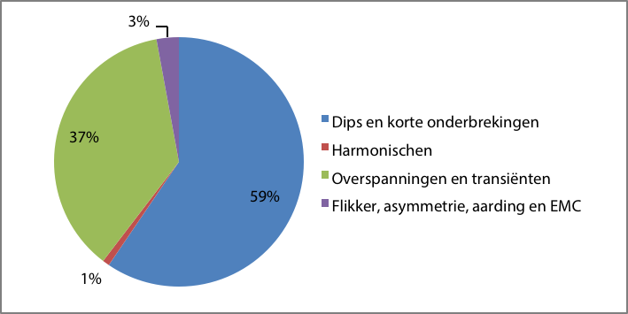Kwaliteitsaspect |
Criterium |
Frequentie |
|
Langzame spanningsvariatie |
|
Snelle spannings-variatie |
|
Asymmetrie |
|
Harmonischen |
|
De frequentie wordt in internationaal verband voor alle in West-Europa gekoppelde netten geregeld.
Aangezien de meeste distributienetten gekoppeld zijn en gevoed worden vanuit het HS-net, wordt de frequentie niet direct beïnvloed door het in- en uitschakelen van een enkele belasting of generator. Toch is in de norm EN 50160 voorgeschreven binnen welke grenzen de frequentie moet zijn voor gekoppelde distributienetten. In de Netcode zijn deze grenzen nog iets aangescherpt:
Volgens de Netcode zijn voor de langzame spanningsvariaties in LS-netten en MS-netten tot 35 kV de volgende variaties toelaatbaar:
In het uren- en minutengebied zijn langzame spanningsvariaties aan de orde van de dag. Deze variaties treden op als gevolg van veranderingen in de belasting en opwekking en door de spanningsregelingen bij de transformatoren en generatoren. Bij het ontwerp van het distributienet wordt rekening gehouden met de regelruimte van de spanning om de afwijkingen van de nominale spanning binnen de gestelde grenzen te houden. De nominale spanning in de LS-netten is 230 V. De nominale spanning in de MS-netten is de waarde die is opgenomen in de contracten met de klanten. Volgens tabel 11.3 mag de spanning voor 95% van de tijd maximaal 10% afwijken van de nominale waarde. De spanning mag echter niet lager zijn dan 15% beneden de nominale waarde. In een LS-net komt dat overeen met 196 V. Deze lage waarde is opgenomen om in uitzonderlijke situaties, zoals tijdens het schakelen in het net ten behoeve van storingsafhandeling of onderhoud, een tijdelijke spanningsdaling toe te staan. Wanneer de spanning zich buiten de genoemde grenzen bevindt, kunnen apparaten niet naar behoren functioneren en mogelijk beschadigen. Overigens wordt bij het vaststellen van het planniveau ook rekening gehouden met het spanningsverlies in de installatie van de aangeslotene, dat 5% kan bedragen.
Volgens hoofdstuk 9 wordt de spanningsvariatie in een distributienet veroorzaakt door een combinatie van transport van actief vermogen (P) en blindvermogen (Q):
 |
[ |
11.1 |
] |
Doordat de R/X-verhouding in een MS-net ongeveer 1 is, wordt de spanningsvariatie ongeveer evenveel door het transport van actief vermogen (P) als van blindvermogen (Q) veroorzaakt. Als gevolg van de hoge R/X-verhouding in LS-netten, wordt in die netten de spanningsvariatie voornamelijk veroorzaakt door transport van actief vermogen (P). Aangezien de spanningsregeling van synchrone generatoren werkt door variatie van het blindvermogen, zijn de opwekkers in distributienetten meestal niet voorzien van een spanningsregeling maar van een constante cos(φ)-regeling.
Langzame spanningsvariaties worden onder meer veroorzaakt door belastingsvariaties als gevolg van het dagelijkse belastingpatroon. Maar ook als nieuwe klanten worden aangesloten, zal de belasting structureel veranderen. Wanneer de belasting toeneemt zal de spanning dalen. Wanneer deze daling te groot wordt, zal de netbeheerder maatregelen treffen, bijvoorbeeld door het aanleggen van een extra kabel of het aanpassen van het spanningsniveau in de voedende transformator. Het gedrag van klanten kan overigens ook leiden tot een stijging van het spanningsniveau. Voorbeelden hiervan zijn het plaatsen van een decentrale opwekeenheid en het op grote schaal plaatsen van zonnepanelen. In dit kader wordt gesproken over een planningsniveau. Netwerken zijn ontworpen voor 30 tot 40 jaar en worden meestal nog langer in bedrijf gehouden. Bij het ontwerpen van een nieuw net let de ontwerper op:
Bij de berekening van de variaties van de spanning voor een locatie in het distributienet moet rekening worden gehouden met:
Spanningsvariaties worden gekwantificeerd door de diepte van de spanningsvariatie ΔU. Deze wordt meestal uitgedrukt in procenten of per unit-waarde van de nominale spanning. Daarnaast wordt gesproken over de 'residual voltage', de resterende spanning. Deze is gelijk aan de nominale spanning min de spanningsvariatie en wordt ook uitgedrukt in procenten of per unit van de nominale spanning.

Met betrekking tot de spanningsvariaties zijn meerdere verschijnselen mogelijk met verschillende mate van verstoring en duur. Deze zijn kort samengevat in figuur 11.2.
Bij snelle spanningsvariaties wordt gesproken over dips en over flikker. Een spanningsdip is een korte (tijdelijke) en plotselinge daling van de spanning. De daling moet minstens 10% van het op dat moment heersende spanningsniveau bedragen om te kunnen spreken van een dip. De spanning moet binnen een minuut weer op het normale niveau zijn. In praktijk duren de meeste dips niet langer dan enkele seconden. Figuur 11.3 geeft een voorbeeld van het tijdsverloop van een spanningsdip van ΔU = 20% en met een resterende spanning van 80%.
Daarnaast is flikker het verschijnsel van herhaalde spanningsvariaties die een hinderlijke flikkering in de verlichting veroorzaken. De hinderlijke spanningsvariaties kunnen kleiner zijn dan 10%. Met name gloeilamp- en halogeenverlichting heeft veel last van flikker. Flikker wordt onder andere veroorzaakt door het herhaald aanlopen van motoren.

De Netcode en EN 50160 stellen geen eisen aan spanningsdips. Wel beschrijven immuniteitscurves, zoals de ITIC curve voor IT-installaties, de mate van dips (diepte en tijdsduur) die specifieke toestellen of processen moeten kunnen verdragen (Cobben, 2009). Het is onvermijdelijk dat dips voorkomen, want spanningsdips worden veroorzaakt door niet-normale situaties, zoals kortsluitingen in het elektriciteitsnetwerk. Daarnaast kan het inschakelen van grote apparaten, zoals transformatoren en industriële motoren, leiden tot spanningsdips.
Door het kortstondig wegvallen van het gewenste spanningsniveau kunnen gevoelige elektronische apparaten, zoals computers, frequentieomvormers en magneetschakelaars, uitvallen. Bij diepe dips kunnen motoren tot stilstand komen. Indien de aangeslotene zeker wil zijn dat zijn proces niet wordt onderbroken door grote spanningsdips, dan moet hij zelf maatregelen nemen, zoals het installeren van een UPS-systeem bij een computercentrum of ziekenhuis.
De belangrijkste oorzaak van dips is een kortsluiting in een net. De diepte van de dip wordt bepaald door de soort kortsluiting en de elektrische afstand tot de kortsluitplaats. Een fase-aardkortsluiting in een zwevend MS-net wordt in het LS-net niet opgemerkt. Indien het MS-net impedantie-geaard is, leidt een fase-aardkortsluiting echter wel tot een dip in het LS-net. Een kortsluiting in het LS-net leidt meestal tot een spanningsdip in de overige LS-strengen achter dezelfde distributietransformator, maar is in het MS-net nauwelijks merkbaar. De duur van de dip wordt bepaald door de tijd die nodig is om de kortsluiting af te schakelen. Figuur 11.4 geeft een voorbeeld van een spanningsdip ten gevolge van een kortsluiting.

Aan de hand van het netwerk van figuur 11.5 wordt de invloed van kortsluitingen op de spanning toegelicht.
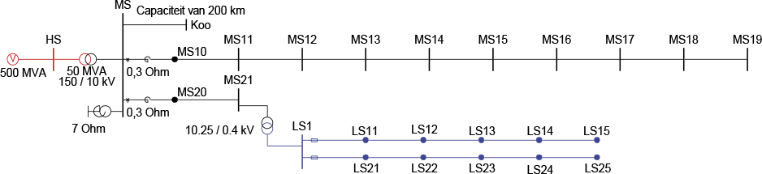Het netwerk bestaat uit een MS-streng met 9 distributiestations MS11 tot en met MS19. Elke MS-kabel is van het type 3x150 Al XLPE 6/10 en is 1000 meter lang. De kabelimpedantie is 0,208+j0,093 Ω/km en de homopolaire capaciteit is 0,37 μF/km. De MS-streng wordt gevoed via een smoorspoel met Snom = 5,54 MVA en uk = 1,66%, waardoor de reactantie gelijk is aan 0,3 Ω. De transformator in het onderstation heeft als parameters: overzetverhouding = 150 kV / 10 kV, Snom = 50 MVA, uk = 20%, Pk = 200 kW, schakeling: YNd5. De nulpuntstransformator op de MS-rail van het onderstation heeft een homopolaire reactantie van 7 Ω. Op dezelfde MS-rail is een virtuele verbinding naar het equivalente knooppunt K_eq aangebracht met een homopolaire capaciteit van 72 μF als representatie van een totaal van 200 km MS-kabel van 19 andere strengen die op het onderstation zijn aangesloten. De voeding op 150 kV-niveau heeft een nominaal kortsluitvermogen van 500 MVA bij een R/X-verhouding van 0. Het LS-net wordt gevoed vanuit knooppunt MS21, dat zich achter een MS-kabel met lengte van 1000 meter bevindt. De distributietransformator is een 400 kVA 10,25/0,4 normtransformator. Elke LS-kabel is van het type 4x150 VVMvKsas/Alk en is 100 meter lang. De normale impedantie is 0,206 + j0,079 Ω/km en de homopolaire impedantie is 0,60 + j0,15 Ω/km.
In de MS-streng is op elk knooppunt een driefasenkortsluiting aangebracht, te beginnen op knooppunt MS10, direct achter de smoorspoel. Knooppunt MS19 bevindt zich op 9000 meter afstand van het onderstation. Figuur 11.6 geeft de waarden van de driefasenkortsluitstroom Ik" als functie van de afstand van de foutplaats tot het onderstation.

Bij elke kortsluiting kan worden berekend hoe groot de spanning is op de MS-rail van het onderstation. De spanningsdaling zal in alle andere MS-strengen, die zijn aangesloten op dezelfde MS-rail, merkbaar zijn. Bij een lagere resterende spanning dan 0,9 pu is sprake van een dip. Figuur 11.7 geeft de waarden van de resterende spanning op de MS-rail van het onderstation als functie van de afstand van de foutplaats tot het onderstation. Hierin is zichtbaar dat in dit net elke driefasenkortsluiting leidt tot een dip.
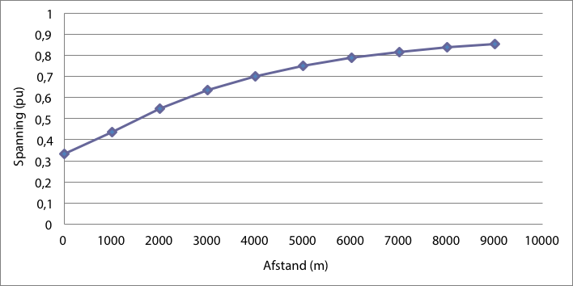Dezelfde berekeningen kunnen worden uitgevoerd voor kortsluitingen in het LS-net. Kortsluitingen in een bepaalde streng zijn merkbaar in alle andere LS-strengen die op de gemeenschappelijke distributietransformator zijn aangesloten. Figuur 11.8 geeft de waarden van de driefasenkortsluitstroom Ik" als functie van de afstand van de foutplaats tot het netstation. Hierbijzijn de kortsluitingen aangebracht op de knooppunten LS1 en LS11 tot en met LS15, van 0 tot 500 m afstand tot het netstation (knooppunt LS1).

Voor elke kortsluiting is berekend hoe groot de spanning is op de LS-rail van het netstation. Een spanningsdaling op deze rail is merkbaar in alle andere aangesloten LS-strengen. Figuur 11.9 geeft de waarden van de resterende spanning op de LS-rail van het netstation als functie van de afstand van de foutplaats tot het netstation. Hieruit kan geconcludeerd worden dat in dit net het omslagpunt van wel of geen dip ligt tussen knooppunten LS14 en LS15 op respectievelijk 400 en 500 m afstand van het netstation (knooppunt LS1).
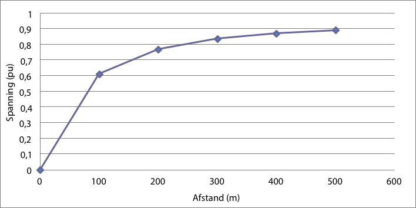 In het LS-net kan ook de invloed van een fase-nul-aardsluiting worden berekend.
De retourstroom loopt via de mantel van de LS-kabel en via de aarde. Aangezien de homopolaire impedantie van de kabel groter is dan de normale impedantie, is de kortsluitstroom kleiner dan de driefasenkortsluitstroom. Figuur 11.10 geeft de waarden van de fase-aardkortsluitstroom Ik" als functie van de afstand van de foutplaats tot het netstation (knooppunt LS1).

Voor elke fase-aardkortsluiting is weer berekend hoe groot de spanning is op de LS-rail van het netstation. Een spanningsdaling op deze rail is merkbaar in alle andere aangesloten LS-strengen. Figuur 11.11 geeft de waarden van de resterende spanning op gestoorde fase van de LS-rail van het netstation als functie van de afstand van de foutplaats tot het netstation. Hieruit kan geconcludeerd worden dat bij fase-aardkortsluitingen in dit net het omslagpunt van wel of geen dip ligt tussen knooppunten LS13 en LS14, op respectievelijk 300 en 400 m afstand van het netstation.
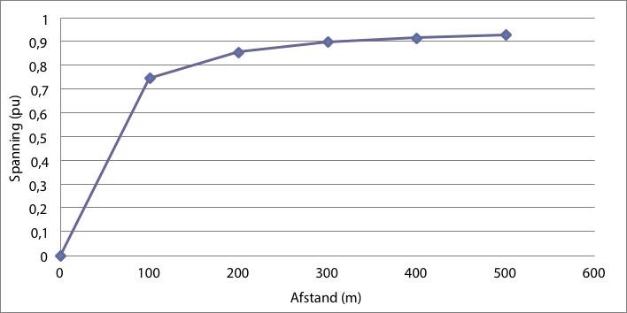Bij een spanningsdipanalyse worden voor alle mogelijke kortsluitingen de resterende spanningen van alle knooppunten in het net berekend. Vervolgens kan aan de hand van de aanwezige beveiligingen de duur van de dips worden bepaald. Door deze gegevens te combineren met de betrouwbaarheidsgegevens van de netcomponenten, waarvan een fout leidt tot een kortsluiting, ontstaat een beeld van het te verwachten aantal dips op jaarbasis. De resultaten blijken te kunnen worden ingedeeld in discrete intervalklassen van tijd en spanning, zoals in tabel 11.4, teneinde te kunnen vergelijken met de immuniteitscurves.
De indeling in discrete intervalklassen wordt verduidelijkt aan de hand van het voorbeeldnet van figuur 11.5. Behalve de afgebeelde strengen achter knooppunt MS10, voedt de 50 MVA transformator ook nog eens 19 andere, in dit voorbeeld identieke, strengen, waarvan alleen de homopolaire capaciteit is gemodelleerd. Voor elk van deze strengen gelden in principe de in figuur 11.6 tot en met figuur 11.11 getoonde resultaten van kortsluitstroom en resterende spanning als functie van de afstand van de foutplaats.
In het voorbeeldnet van figuur 11.5 is de instelling van de maximum stroom-tijdbeveiliging op de MS-rail van het onderstation voor de streng naar MS10: I >/T> = 410 A / 1,6 s en I>>/T>> = 2000 A / 0,6 s. Dit betekent dat in het MS-net conform de resultaten in figuur 11.6 alle driefasenkortsluitingen op 0,6 s worden afgeschakeld. Deze afschakeltijd wordt geclassificeerd in het tijdsinterval van 0,5 tot 1,0 s. Bij strengen die langer zouden zijn dan 9 km kan de kortsluitstroom lager worden dan 2000 A, waardoor op 1,6 s afgeschakeld zou worden.
De faalfrequentie van elke MS-kabel wordt gesteld op 0,025 per km per jaar. Dit betekent dat de faalfrequentie van elke 1 km lange MS-kabel in figuur 11.5 gelijk is aan 0,025 per jaar. De faalfrequentie van een MS-streng met 9 kabels is dan gelijk aan 9 x 0,025 = 0,225 per jaar. Aangezien er in totaal 20 (=19+1) van deze MS-strengen zijn, is de totale faalfrequentie gelijk aan 20 x 0,225 = 4,50 per jaar.
In tabel 11.4 is het voorbeeld uitgerekend voor het net, dat bestaat uit 20 gelijke MS-strengen met elk 9 kabels en netstations, waarbij elke kabel dezelfde faalfrequentie heeft. De betrouwbaarheid van alle MS-kabels is gesteld op 0,025 per km en per jaar. In het voorbeeld zijn alleen driefasenkortsluitingen berekend, in het midden van alle MS-kabels. Als dan alle berekende resterende spanningen worden geclassificeerd in tijdsintervallen en in spanningsintervallen van 0,1 pu, ontstaat tabel 11.4. Volgens deze tabel is het aantal te verwachten dips, waarvoor de resterende spanning tussen 0,8 en 0,9 pu is, gelijk aan 1,50 per jaar. De resultaten in deze tabel kunnen worden vergeleken met de ITIC-curve, die de grenswaarden voor IT-apparatuur definieert (Cobben, 2009).
De som van alle spanningsdip-frequenties in tabel 11.4 is gelijk aan 4,5 en dat is gelijk aan de totale faalfrequentie, omdat alle kortsluitingen leiden tot een spanningsdip.
0,01.. |
0,02.. |
0,1.. |
0,3.. |
0,5.. |
1.. |
2.. |
5.. |
> |
|
0,8 .. 0,9 pu |
1,500 |
||||||||
0,7 .. 0,8 pu |
1,000 |
||||||||
0,6 .. 0,7 pu |
0,500 |
||||||||
0,5 .. 0,6 pu |
0,500 |
||||||||
0,4 .. 0,5 pu |
0,500 |
||||||||
0,3 .. 0,4 pu |
0,500 |
||||||||
0,2 .. 0,3 pu |
|||||||||
0,1 .. 0,2 pu |
|||||||||
0,01 .. 0,1 pu |
Aangezien kortsluitingen in een LS-net ook leiden tot een dip in de andere LS-strengen, die op dezelfde distributietransformator zijn aangesloten, is het zinvol de spanningsdipanalyse ook op het LS-net te betrekken. In het volgende voorbeeld wordt aangenomen dat voor de LS-kabels dezelfde faalfrequenties per km gelden als voor de MS-kabels, zodat eenzelfde tabel kan worden berekend voor bijvoorbeeld het knooppunt LS1, direct aan de LS-zijde van de distributietransformator. In het voorbeeld zijn de LS-strengen beveiligd met een smeltpatroon van het type 200 A gL/gG. De uitschakelkarakteristiek is gegeven in figuur 11.12.

In het voorbeeld zijn wederom alleen driefasenkortsluitingen in het midden van de kabels berekend. Volgens figuur 11.8 leiden alle kortsluitingen tot een afschakeling. De totale faalfrequentie van de twee LS-strengen is dan gelijk aan: f = 2 ⋅ 5 ⋅ 0,0025 = 0,025 per jaar.
Elke kortsluiting in het LS-net wordt door een smeltveiligheid afgeschakeld, die in verband met de selectiviteit sneller uitschakelt dan de beveiliging van het MS-net. De afschakelduur is afhankelijk van de kortsluitstroom en daarmee van de locatie van de foutplaats.
Tabel 11.5 laat zien dat de resterende spanning op knooppunt LS1 dips kent die een gevolg zijn van kortsluitingen in het MS-net en daarmee geclassificeerd zijn in het tijdsinterval 0,5 tot 1 s. Ook kent de resterende spanning dips die het gevolg zijn van kortsluitingen in het LS-net, die geclassificeerd zijn in de tijdsintervallen van 0,01 tot 0,3 s.
0,01.. |
0,02.. |
0,1.. |
0,3.. |
0,5.. |
1.. |
2.. |
5.. |
> |
|
0,8 .. 0,9 pu |
0,005 |
0.005 |
0,005 |
1,500 |
|||||
0,7 .. 0,8 pu |
0,005 |
1,000 |
|||||||
0,6 .. 0,7 pu |
0,500 |
||||||||
0,5 .. 0,6 pu |
0,500 |
||||||||
0,4 .. 0,5 pu |
0,005 |
0,500 |
|||||||
0,3 .. 0,4 pu |
0,500 |
||||||||
0,2 .. 0,3 pu |
|||||||||
0,1 .. 0,2 pu |
|||||||||
0,01 .. 0,1 pu |
Volgens de Netcode geldt voor de snelle spanningsvariaties in LS-netten en MS-netten tot 35 kV:

Het veelvuldig in- en uitschakelen van grote belastingen, zoals lasapparatuur, pompen, zware (industriële) motoren, smeltovens en medische apparatuur, leidt tot snelle spanningsvariaties. Deze snelle spanningsvariaties kunnen leiden tot 'flikker'. Dit is een visueel verschijnsel dat veroorzaakt wordt door snelle veranderingen van de lichtintensiteit van elektrische verlichting. Flikker leidt in principe niet tot schade aan apparatuur, maar kan wel zorgen voor irritatie bij mensen. Vanwege de eigenschappen van het menselijk oog zijn flikkeringen met een frequentie tot 35 maal per seconde (2100 maal per minuut) waar te nemen.
Het lastige van flikker is dat niet iedereen hetzelfde waarnemingsniveau heeft. Internationaal is in de norm IEC 61000-3-7 vastgelegd bij welke frequentie en vorm van een spanningsverandering de flikkeringen van een 60 Watt gloeilamp door de helft van de mensen wordt waargenomen. In dit geval spreekt men over een korte termijn (short term) spanningskwaliteitsparameter van Pst = 1.
Pst is het over 10 minuten bepaalde flikkerniveau. De flikkercurve in figuur 11.13 geeft voor waarneembare frequenties de grens voor de korte termijn spanningsvariaties aan die nog acceptabel zijn. Voor de gehele curve geldt: Pst = 1.
Voor 0,2 tot 30 inschakelingen per minuut, waarbij de stroom stapvormig verandert, kan de Pst worden berekend met een uit IEC 61000-3-7 afgeleide formule (Cobben, 2009):
 |
[ |
11.2 |
] |
met:
| d | spanningsdip (%) |
| r | aantal inschakelingen per minuut |
Volgens deze formule is bij 3 inschakelingen per minuut en een spanningsdip van 2 % de Pst gelijk aan 1. Naast de index voor de korte termijn is de index voor de lange termijn (long term) Plt gedefinieerd, die kan worden berekend uit het gemiddelde van 12 opeenvolgende Pst -waarden. Aangezien Pst is betrokken op 10-minuten-metingen, is Plt betrokken op twee uren.
[ |
11.3 |
] |
Flikker kan worden gemeten met een flikkermeter, die gespecificeerd is in IEC 61000-4-15. Er is sprake van een overschrijding van de kwaliteitscriteria uit de Netcode, wanneer de Plt-waarde gedurende meer dan 5% van een week groter dan 1 is. De Plt-waarde mag in ieder geval niet groter zijn dan 5.
Bovenstaande beschrijft de eisen ten aanzien van de Pst en de Plt in het net. Deze waarden ontstaan door de fluctuaties die door verschillende oorzaken in het net aanwezig zijn (de zogenaamde achtergrond-flikker) en door de bijdrage van de aangeslotenen. De bedoeling van de Netcode is om met de kwaliteitsindicatoren zoals Pst en Plt een eerlijke beoordeling te krijgen over de bijdrage aan de netvervuiling. De netbeheerder en de individueel aangeslotenen dragen elk met hun eigen gedrag bij aan de flikker in het net. De gevolgen voor de flikker hangen af van de netimpedantie. De in de Netcode gehanteerde eisen gelden voor de totaal optredende flikker. In de navolgende voorbeelden wordt de flikker bepaald die een individuele aangeslotene veroorzaakt. Deze bijdrage wordt aangeduid met ΔPst en ΔPlt. Met de in het net aanwezige achtergrond-flikker (Pst,achtergrond en Plt,achtergrond), kan worden bepaald of op het aansluitpunt aan de in de Netcode gestelde eisen wordt voldaan. De wijze waarop de bijdrage aan de flikker wordt gesommeerd bij de achtergrond-flikker, wordt verderop beschreven. De Netcode beperkt de maximale bijdrage van aangeslotenen aan de Pst en de Plt door de eis: ΔPst ≤ 1,0 en ΔPlt ≤ 0,8. Bij het aansluiten van een klant op het LS-net moet hiermee worden beoordeeld of de optredende inschakelstromen in relatie tot de netimpedantie hinder tot gevolg kan hebben. Het bepalen van de bijdrage van een aangeslotene wordt met behulp van een voorbeeld nader uitgewerkt.
Voor het berekenen van de spanningsdip wordt onderscheid gemaakt tussen het inschakelen van een symmetrische driefasenbelasting en een enkelfasige belasting. De berekening wordt toegelicht aan de hand van een van de LS-strengen van figuur 11.5. Deze strengen en hun distributietransformator zijn in detail afgebeeld in figuur 11.14.

De toegepaste kabel is van het type 4x150 VVMvKsas/Alk met een 50 mm2 Cu-aardscherm. De totale lengte van de distributietransformator tot het einde van de streng is 500 m. De dip wordt berekend voor een inschakelstroom van 16 A met een cos(φ) van 0,8. Het vervangingsschema voor het inschakelen van een driefasenbelasting is afgebeeld in figuur 11.15. Hierbij is de transformatorimpedantie verwaarloosd, waardoor bij inschakelen van de belasting de spanning op de klemmen van de distributietransformator niet verandert. De transformator is gemodelleerd met een spanningsbron Utr. De in te schakelen belasting is gemodelleerd met een stroombron.

Aangezien de belasting driefasensymmetrisch is, speelt alleen de impedantie van de fasegeleiders een rol bij het berekenen van de spanningsdip. Als gevolg van de belastingstroom Ibelasting ontstaat een spanningsdip ΔU over de kabel. Er geldt:
[ |
11.4 |
] |
De impedantie van de fasegeleiders van de kabel is af te leiden uit de brochure van de fabrikant. Voor het genoemde type geldt voor een lengte van 500 m: Zfase = 0,103 + j0,040 Ω. Ervan uitgaande dat de spanning aan de klemmen van de transformator de referentie is, met een grootte |Utr| = 231 V en een hoek gelijk aan nul, geldt voor een belastingstroom van 16 A en een cos(φ) van 0,8:
 |
[ |
11.5 |
] |
De spanningsdip is dan gelijk aan de spanning over de fase-impedantie:
 |
[ |
11.6 |
] |
De absolute waarde van de spanning bij de belasting wordt dan:
[ |
11.7 |
] |
De absolute waarde van de spanningsdip is gelijk aan: |ΔU| = 1,8 V. Dit kan overigens ook worden benaderd door de imaginaire term van ΔU te verwaarlozen:
[ |
11.8 |
] |
De 'gemeten' spanningsdip dmax,3f,gemeten is gelijk aan:
[ |
11.9 |
] |
Indien de belasting bijvoorbeeld twee maal per minuut wordt ingeschakeld, is de 'gemeten' ΔPst volgens formule 11.2 gelijk aan:
[ |
11.10 |
] |

Het vervangingsschema voor het inschakelen van een enkelfasige belasting is afgebeeld in figuur 11.16. De transformator is gemodelleerd met een spanningsbron Utr. Net als in figuur 11.15 is voor het gemak de transformatorimpedantie verwaarloosd, waardoor bij inschakelen van de belasting de spanning op de klemmen van de distributietransformator niet verandert. Dit is overigens niet altijd gerechtvaardigd, zoals bij het aanlopen van een grote motor die direct op de klemmen van de transformator is aangesloten. In dat geval moet ook de transformatorimpedantie in de berekening worden meegenomen. De belasting is gemodelleerd met een stroombron (Ibelasting).
Aangezien de belasting tussen fase en nul is aangebracht, loopt de retourstroom door de nulgeleider en het scherm van de kabel (en eventueel door de aarde, maar die wordt in dit voorbeeld verwaarloosd). Hierom zijn de impedanties van fasegeleider, nulgeleider en scherm van belang bij het berekenen van de spanningsdip. De retourstroom vertakt zich over de nulgeleider en het scherm, waardoor de retourimpedantie wordt berekend uit de parallelschakeling van Znul en Zscherm. De impedantie van de nulgeleider is gelijk aan de impedantie van de fasegeleider. De impedantie van het scherm is af te leiden uit de brochure van de fabrikant. Voor een kabel met koperen aardscherm met een doorsnede van 50 mm2 is de weerstand volgens de fabrikant 0,387 Ω/km. De reactantie wordt verwaarloosd. Hieruit volgt voor de retourimpedantie van 500 m kabel:
[ |
11.11 |
] |
De spanningsdip is gelijk aan de som van de spanningen over de fasegeleider en het retourpad. Aangezien het totale circuit bestaat uit het pad van de fasegeleider en het retourpad, wordt de som van Zfase en Zretour ook wel aangeduid met de term circuit-impedantie: Zcircuit. Hierbij is de impedantie van de distributietransformator verwaarloosd.
 |
[ |
11.12 |
] |
De absolute waarde van de spanning bij de belasting wordt dan:
 |
[ |
11.13 |
] |
De absolute waarde van de spanningsdip is gelijk aan: |ΔU| = 2,9 V. Dit kan ook hier weer worden benaderd door de imaginaire term te verwaarlozen:
 |
[ |
11.14 |
] |
De 'gemeten' spanningsdip dmax,1f,gemeten is gelijk aan:
 |
[ |
11.15 |
] |
Indien de belasting twee maal per minuut wordt ingeschakeld, is de 'gemeten' ΔPst volgens formule 11.2 gelijk aan:
[ |
11.16 |
] |
De bedoeling van de Netcode is om met de kwaliteitsindicatoren, zoals Pst en Plt, een beoordeling te krijgen over de bijdrage aan de netvervuiling. Een individuele aangeslotene draagt met zijn eigen gedrag bij aan de flikker in het net. De gevolgen voor de flikker zijn afhankelijk van de netimpedantie. Een aangeslotene aan het einde van een streng veroorzaakt een grotere bijdrage aan het flikkerniveau dan een aangeslotene met dezelfde installatie aan het begin van de streng. Hierom wordt de gemeten netimpedantie voor alle aangeslotenen ontstaat. Indien de netimpedantie kleiner is dan de referentie-impedantie, moet bij klachten over flikker het net verzwaard worden.
De maximaal toegestane bijdrage ΔPst aan de Pst door een aangeslotene is 1. Voor de bijdrage aan de ΔPlt (lange termijn) aan de Plt stelt de Netcode een strengere eis: deze mag niet groter zijn dan 0,8. Bovendien mag zonder uitval van productie, grote afnemers of verbindingen de snelle spanningsvariatie ΔU niet groter zijn dan 3% van de nominale spanning. Deze waarden zijn conform IEC 61000-3-3 betrokken op een standaard verbinding waarvoor geldt:
 |
[ |
11.17 |
] |
Van deze standaard verbinding is de standaard impedantie voor symmetrische driefasenbelastingen:
[ |
11.18 |
] |
Van deze standaard verbinding is de standaard impedantie voor enkelfasige belastingen:
 |
[ |
11.19 |
] |
Flikker is vrijwel altijd in meer of mindere mate op de achtergrond aanwezig in het net en wordt vrijwel geheel veroorzaakt door acties van alle aangeslotenen. Dit achtergrond-flikkerniveau Plt,achtergrond, vermeerderd met de bijdrage van de individuele aangeslotene, ΔPlt, levert de uiteindelijke kwaliteitsindicator voor de flikker. Hierbij worden de afzonderlijke indicatoren gesommeerd met de derde macht. Dit is een benadering die verband houdt met de fysiologie van het menselijk oog. Door de derde macht hebben kleine waarden voor ΔPlt (tot 0,3) slechts geringe invloed op de totale Plt.
[ |
11.20 |
] |
Dit houdt in dat bij een aangeslotene met een maximaal toegestane bijdrage van
ΔPlt = 0,8 de achtergrond Plt niet groter mag zijn dan 0,79, want in dat geval is de Plt precies gelijk aan 1.
 |
[ |
11.21 |
] |
De achtergrond Plt kan worden verbeterd door het net te verzwaren.
Het elektriciteitsdistributienet is een driefasensysteem. In de middenspanningsnetten wordt het grootste deel van de belasting driefasig symmetrisch opgenomen. In enkele gevallen, zoals bij de voeding van de spoorwegen (HSL en Betuwelijn), is de belasting tussen twee fasen aangesloten. In de laagspanningsnetten zijn de meeste aansluitingen op één fase gerealiseerd. Hierbij wordt geprobeerd alle eenfasebelastingen zodanig te verdelen dat de drie fasen zo goed mogelijk gelijk worden belast. Als gevolg zal de spanning in het distributienet praktisch driefasensymmetrisch zijn. De afwijking van de drie fasespanningen ten opzichte van de driefasensymmetrie wordt aangegeven met de asymmetrie.
De drie fasespanningen kunnen worden gerepresenteerd met een normale, inverse en homopolaire component, zoals beschreven in paragraaf 7.5. Volgens de Netcode geldt voor de asymmetrie van de drie fasen in LS-netten en MS-netten tot 35 kV:
De asymmetrie is zichtbaar indien in een driefasensysteem de effectieve waarden van de spanningen van de drie fasen niet gelijk aan elkaar zijn of niet 120 graden ten opzichte van elkaar verschoven zijn. Figuur 11.17 geeft een voorbeeld voor drie fasen, waarvan de spanningen 1,0 pu, 0,9 pu en 0,7 pu bedragen. Van het voorbeeld zijn de groottes van de componentspanningen:
U0 = 0,09 pu
U1 = 0,87 pu
U2 = 0,09 pu
Door asymmetrie kunnen apparaten verstoord en beschadigd raken. Een ander belangrijk gevolg van asymmetrie is dat motoren, generatoren en kabels extra opwarmen. Deze opwarming heeft extra energieverliezen tot gevolg en resulteert in levensduurverkorting.
Asymmetrie wordt veroorzaakt door niet-symmetrische belastingen. Dit is bijvoorbeeld het geval wanneer enkelfasige belastingen niet goed over de verschillende fasen van een driefasen aansluiting worden verdeeld. Maar ook zware belastingen tussen twee fasen veroorzaken asymmetrie. Behalve door een asymmetrische belasting kan spanningsasymmetrie ook worden veroorzaakt door afwijkingen van de voeding of generatoren. Asymmetrie kan worden opgelost door belastingen beter te verdelen over de fasen. Ook kan het plaatsen van een nulpunttransformator (paragraaf 8.4) voor verbetering zorgen.
De asymmetrie is gedefinieerd als de verhouding tussen de spanningen in het inverse en normale systeem:
 |
[ |
11.22 |
] |
Om een en ander te verduidelijken wordt de berekening van de asymmetrie toegelicht met een voorbeeld. In het net van figuur 11.5 wordt op knooppunt MS19 aan het einde van de MS-streng een asymmetrische belasting van 100 W aangebracht tussen de twee fasen b en c. Naar verwachting zal er bij een nominale spanning van 10 kV een stroom van ongeveer 100 A gaan lopen. De gevolgen voor de asymmetrie kunnen worden berekend aan de hand van het vervangingsschema van figuur 11.18, gebaseerd op de symmetrische componentenmethode voor een tweefasenkortsluiting met impedantie, zoals beschreven in hoofdstuk 10 (kortsluitberekeningen). Aangezien er geen contact is met aarde, kan het vervangingsschema voor de homopolaire component achterwege blijven.
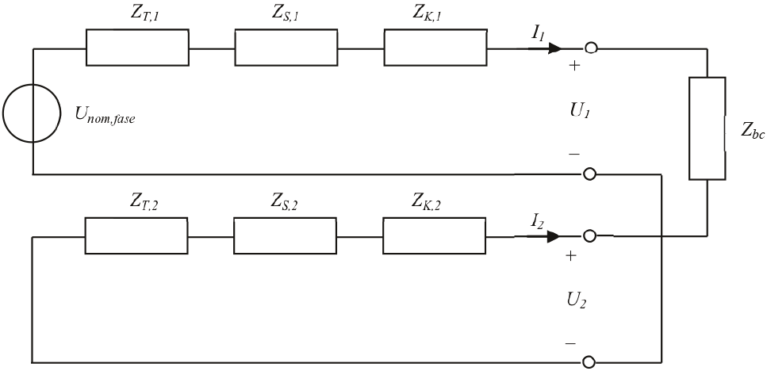In het netwerk zijn de componenten dezelfde als die in figuur 11.5. In het vervangingsschema zijn de impedanties gelijk aan:
Uit het vervangingsschema kunnen de stromen van de component-netwerken worden afgeleid:
[ |
11.23 |
] |
Bovendien is I2 = –I1. Hieruit volgt voor de spanningen U1 en U2:
 |
[ |
11.24 |
] |
Zodoende is de factor voor de asymmetrie gelijk aan:
[ |
11.25 |
] |
De hierboven berekende situatie voldoet niet aan de eisen van de Netcode (2%).
Asymmetrie heeft tot gevolg dat de belastbaarheid van een kabel afneemt. Met name in laagspanningsnetten kan dit voorkomen. Bij elke afwijking van de driefasensymmetrie zal er een stroom door de retourgeleiders lopen, die een extra verlies tot gevolg heeft. Figuur 11.19 toont een laagspanningskabel met een driefasenbelasting van 3 x 80 A bij een cos(φ) van 1. Het totale belastingsvermogen is dan 55 kVA. Het laagspanningsnet wordt gevoed via een 400 kVA distributietransformator vanuit een voldoende sterke netvoeding.

In de berekening worden voor de eenvoud de impedanties van de netvoeding en de transformator buiten beschouwing gelaten. Ook de reactanties worden in dit voorbeeld buiten beschouwing gelaten. De gegevens van de laagspanningskabel zijn dan (bij een temperatuur van 20 °C):
| Rfase | 0,0206 Ω |
| Rnul | 0,0206 Ω |
| Rscherm | 0,0387 Ω |
| Inom | 240 A |
Indien de belasting netjes driefasensymmetrisch verdeeld is, is het verlies over de laagspanningskabel:
[ |
11.26 |
] |
Indien de belasting op één fase is aangesloten, gaat de belastingstroom retour via de nulgeleider en het scherm en is het verlies over de laagspanningskabel de som van het verlies in de geleider en de retour:
[ |
11.27 |
] |
Het totale verlies is bij een eenfasebelasting dus vijf maal zo groot als wanneer hetzelfde vermogen via drie fasen gevoed zou worden. Hierbij is nog steeds uitgegaan van een temperatuur van de geleider van 20 °C. In werkelijkheid is de temperatuur hoger, omdat bij deze stroom een geleider van de kabel voor 100% belast is. Als gevolg hiervan zijn de weerstanden hoger en is het verlies nog groter.
Indien de belasting op drie fasen is aangesloten maar niet driefasensymmetrisch verdeeld is, is het verlies gelijk aan de som van de verliezen in de drie geleiders en de retour. In het volgende voorbeeld zijn de stromen over de drie fasen als volgt verdeeld (cos(φ)=1):
[ |
11.28 |
] |
Hieruit kunnen de equivalente impedanties van de belasting worden bepaald. Deze zijn respectievelijk:
R1 = 2,888 Ω, R2 = 1,925 Ω, R3 = 5,775 Ω
Bij een driefasensymmetrisch spanningsstelsel kunnen hieruit de complexe stromen worden bepaald:
 |
[ |
11.29 |
] |
De retourstroom is gelijk aan de negatieve som van alle fasestromen:
[ |
11.30 |
] |
Het verlies over de kabel is tenslotte:
 |
[ |
11.31 |
] |
In dit geval is het verlies 33% groter dan wanneer het vermogen symmetrisch over de drie fasen verdeeld zou zijn. Hiermee is aangetoond dat afwijking van de driefasensymmetrie leidt tot extra stromen in de retourgeleiders, extra verlies in het systeem en bovendien tot een verminderde belastbaarheid van de kabels. Een van de mogelijkheden om asymmetrie te verhelpen is toepassing van een nulpunttransformator, zoals beschreven in hoofdstuk 8. Ook andere methodes zijn beschreven in de literatuur (Cobben, 2009).

In alle West-Europese netten heeft de spanning een frequentie van 50 Hz. Men spreekt over harmonische vervorming indien de spanning niet zuiver sinusvormig is, maar vervormd is. De spanning kan worden beschreven als een sommatie van de 50 Hz-basis en sinusvormige signalen van andere frequenties. In de meeste gevallen gaat het hierbij om gehele veelvouden van 50 Hz, ook wel hogere harmonischen genoemd. Mogelijke gevolgen van harmonische vervorming zijn: extra energieverliezen, uitval van elektronische apparatuur en overbelasting van nulgeleiders. Hierom stelt de Netcode grenzen aan de totale harmonische vervorming. Een maat voor de harmonische vervuiling is de Total Harmonic Distortion (THD). Volgens de Netcode moet voor de harmonischen in LS-netten en MS-netten tot 35 kV gelden:
Ten aanzien van de spanningen van de harmonischen waarvan de frequenties gehele veelvouden zijn van de nominale frequentie, baseert de toezichthouder zich op de norm EN 50160. Tabel 11.6 geeft een overzicht van de maximaal toegestane waarden voor de individuele harmonische spanningen tot en met de 25-ste harmonische. Voor harmonischen met een ordenummer hoger dan 25 zijn geen waarden genomen omdat zij normaal gesproken klein zijn en onvoorspelbaar door resonantie-effecten.
Oneven harmonischen |
Even harmonischen |
||||
Geen veelvouden van 3 |
Veelvouden van 3 |
||||
Orde h |
Relatieve spanning |
Orde h |
Relatieve spanning |
Orde h |
Relatieve spanning |
5 |
6% |
3 |
5% |
2 |
2% |
7 |
5% |
9 |
1,5% |
4 |
1% |
11 |
3,5% |
15 |
0,5% |
6...24 |
0,5% |
13 |
3% |
21 |
0,5% |
||
17 |
2% |
||||
19 |
1,5% |
||||
23 |
1,5% |
||||
25 |
1,5% |
||||
Figuur 11.21 illustreert de invloed van een harmonische component van 250 Hz (de vijfde harmonische) met een amplitude van 20% van de amplitude van de 50 Hz-basiscomponent van de netspanning. De linkergrafiek geeft de twee harmonische componenten (50 en 250 Hz) weer en de rechtergrafiek de resulterende harmonisch vervormde spanning. Een dergelijke verstoring is volgens de Netcode overigens niet toelaatbaar.
Harmonische vervorming wordt veroorzaakt door niet-lineaire belastingen. De belangrijkste bron van harmonische vervuiling is vermogenselektronica. Deze is tegenwoordig in veel apparatuur te vinden, zoals gelijkrichters van computers, televisies of besturingskasten van elektrische motoren. Ook spaarlampen, fluorescentielampen en omvormers voor zonnepanelen veroorzaken hogere harmonischen in het elektriciteitsnetwerk.

Harmonische stromen veroorzaken zowel in het net als bij de aangeslotenen problemen. De gevolgen en de oplossingen zijn voor iedere situatie anders en moeten afzonderlijk worden aangepakt. Zo kunnen bijvoorbeeld de maatregelen, waarmee de effecten van harmonischen binnen een installatie worden gereduceerd, een negatief effect hebben op de harmonischen in het net. Harmonische stromen en spanningen kunnen leiden tot overbelasting van nulgeleiders, transformatoren, condensatoren, maar ook tot oververhitting van asynchrone motoren en tot onverwachte uitschakelingen door beveiligingen.
Er zijn verschillende methoden om harmonische vervuiling terug te dringen, zoals het toepassen van passieve filters voor een specifieke frequentie en actieve filters.
Een vervormde wisselstroom of wisselspanning kan wiskundig worden beschreven als een som van een gelijkstroomcomponent en een oneindige reeks van cosinuscomponenten, waarvan de frequentie een geheel veelvoud is van de basisfrequentie (Fourier-analyse). Als T de periode is van het signaal x(t) is de frequentie: f = 1/T. Het periodieke signaal x(t) kan dan geschreven worden als:
 |
[ |
11.32 |
] |
met: ω=2πf
De coëfficiënten ch vormen gezamenlijk het spectrum van het signaal x(t). Zij zijn de amplitudes van de hogere harmonischen, die elk nog hun eigen fasehoek φh hebben.
Figuur 11.22 toont de opbouw van een signaal uit zijn harmonische componenten. Het getoonde signaal bestaat uit een grondharmonische, een derde en een vijfde harmonische. Alle overige harmonische componenten hebben een amplitude van nul. De fasehoeken van alle harmonische componenten zijn nul. De amplitudes van de harmonische componenten zijn:

Wordt in figuur 11.22 de derde harmonische verwijderd, dan ontstaat het signaal van figuur 11.21.
Het is gebruikelijk om de harmonische componenten van een signaal in een histogram weer te geven. Deze weergave wordt het harmonische spectrum of frequentiespectrum genoemd. Figuur 11.23 illustreert het spectrum van het signaal van figuur 11.22. In het spectrum is ook de grondharmonische afgebeeld. Deze wordt op 100% gehouden maar is niet altijd in het spectrum afgebeeld. Meestal worden alleen de amplitudes van de hogere harmonischen weergegeven. Weergave van de fasehoek φh is alleen van belang voor de reconstructie van de golfvorm en voor het uitvoeren van harmonische loadflowberekeningen.
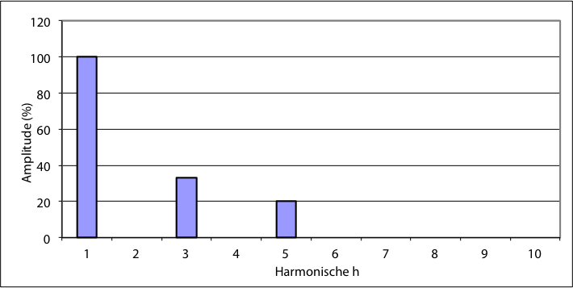Van een harmonische stroom kan de RMS-waarde worden berekend door sommatie van de kwadraten van de amplitudes van de harmonische componenten.
[ |
11.33 |
] |
Met: Ih : de effectieve waarde van de h-de harmonische component van de stroom, in A
De Total Harmonic Distortion (THD) is een maat voor de totale harmonische vervuiling. Deze wordt in relatie tot de grondharmonische als volgt berekend:
[ |
11.34 |
] |
De Total Harmonic Distortion kan ook berekend worden in relatie tot de RMS-waarde van het signaal:
[ |
11.35 |
] |
Uit vergelijkingen 11.33 en 11.34 volgt een alternatieve wijze om de RMS-waarde van de stroom te berekenen:
 |
[ |
11.36 |
] |
Indien de grondharmonische van de stroom in figuur 11.22 en figuur 11.23 een effectieve waarde heeft van I A, heeft het afgebeelde harmonische signaal een RMS-waarde van:
Irms = I⋅√(12+0,332+0,22)= I⋅1,07 A.
De THD in relatie tot de grondharmonische is dan: THDI = √(0,332+0,22) / 1=0,39
en gerelateerd aan de RMS-waarde: THDrms,I = √(0,332+0,22) / 1,07=0,36
Door de harmonische stromen ontstaan harmonische spanningen in het netwerk. De RMS-waarden worden op dezelfde wijze als bij de stromen berekend:
[ |
11.37 |
] |
Met: Vh : de effectieve waarde van de h-de harmonische component van de fasespanning in V
De Total Harmonic Distortion is een maat voor de totale harmonische vervuiling van de spanning en kan op dezelfde wijze als bij de stromen berekend worden:
[ |
11.38 |
] |
Uit vergelijkingen 11.37 en 11.38 volgt een alternatieve wijze om de RMS-waarde van de spanning te berekenen:
[ |
11.39 |
] |
Het actieve vermogen van een signaal, waarin hogere harmonischen voorkomen, is per fase:
[ |
11.40 |
] |
Met:
| Vh | de effectieve waarde van de harmonische fasespanning in V |
| Ih | de effectieve waarde van de harmonische spanning in A |
| φh | de hoek tussen de spanningsvector en de stroomvector in radialen |
Het blindvermogen van een signaal, waarin hogere harmonischen voorkomen, is per fase gedefinieerd als:
[ |
11.41 |
] |
De term Q1 is het bekende blindvermogen van de 50 Hz-component. De rechterterm (de sommatie) in vergelijking 11.41 is het aandeel van de hogere harmonischen in het totale blindvermogen. Deze definitie van het blindvermogen is nog steeds geldig in een zuiver sinusvormig signaal waar geen hogere harmonischen in voorkomen, omdat in dat geval de termen vanaf h=2 geen bijdrage leveren.
Het schijnvermogen is gedefinieerd als het product van de RMS-waarden van de stroom en de spanning:
 |
[ |
11.42 |
] |
In vergelijking 11.42 worden de RMS-waarden berekend met formules 11.33 en 11.37. Het blijkt dat bij signalen die met hogere harmonischen vervormd zijn, de bekende relatie S = √(P2 + Q2) tussen schijnbaar, actief en blindvermogen niet meer opgaat. Het verschil wordt veroorzaakt door de wisselwerking tussen de afzonderlijke harmonische componenten van spanning en stroom. Dit verschil wordt het distorsievermogen D genoemd. Met deze definitie kan het schijnvermogen S ook beschreven worden als functie van het actieve vermogen P (uit vergelijking 11.40), het blindvermogen Q (uit vergelijking 11.41) en het distorsievermogen D:
[ |
11.43 |
] |
Het blindvermogen van harmonisch vervuilde signalen bestaat dus uit drie componenten:
Het quotiënt van het actieve vermogen en het schijnvermogen is gedefinieerd als de arbeidsfactor (total power factor). Bij een zuiver sinusvormig signaal is de arbeidsfactor gelijk aan de cos(φ), zodat geldt: P = S⋅cos(φ). Deze cos(φ) wordt ook wel de fundamentele verschuivingsfactor (fundamental displacement factor) genoemd. Bij een met harmonischen vervuild signaal heeft de arbeidsfactor echter betrekking op het totale signaal, inclusief alle hogere harmonischen. Hierom is bij harmonisch vervormde signalen de arbeidsfactor niet gelijk aan de bekende cos(φ), die alleen betrekking heeft op de basisharmonische.
Met behulp van een condensator is alleen de 50 Hz-component van het blindvermogen te compenseren. De component D wordt door een condensator beïnvloed, maar kan er niet door worden gecompenseerd. Indien condensatoren worden aangebracht die het totale blindvermogen Q compenseren, is de maximaal haalbare arbeidsfactor gelijk aan:
 |
[ |
11.44 |
] |
Bij het meten van een met harmonischen vervuild signaal volstaat alleen een meetinstrument dat in staat is de effectieve RMS-waarde te meten. Er bestaan ook meetinstrumenten die uitgaan van de gemiddelde waarde van signaal, maar die zijn gekalibreerd voor zuiver sinusvormige signalen, zodat zij bij sterke harmonische vervorming een te lage waarde zullen meten (Copper, 2002). Zo zal een op gemiddelde waarde gebaseerd meetinstrument bijvoorbeeld bij de voedingsstroom van een PC een waarde van 0,61 A aangeven, terwijl een op effectieve RMS-waarde gebaseerd meetinstrument een waarde van 1 A zal aangeven. De respons van een gemiddelde waardemeter op een enkelfasige gelijkrichter is 40% te laag. Indien vertrouwd wordt op de gemiddelde waarde, bestaat de kans dat stroomleidingen bij sterke harmonische vervorming overbelast raken.
Van het net kan een frequentiespectrum vastgesteld worden, dat voor een specifiek punt de impedantie beschrijft als functie van de frequentie. Hiermee kan worden beoordeeld of vervuiling met hogere harmonischen tot ongewenste effecten kan leiden. De impedantie van een component in het net dat een inductief of een capacitief deel heeft, is sterk afhankelijk van de frequentie. De impedantie van een spoel is, onder verwaarlozing van de weerstand:
| [ Ω ] | [ |
11.45 |
] |
Met: L: inductie, in H
De impedantie van een condensator is:
 [ Ω ] [ Ω ] |
[ |
11.46 |
] |
Met: C: capaciteit, in F
Ook de weerstand van componenten is afhankelijk van de frequentie, onder andere vanwege het skin-effect, waardoor de stroom bij toenemende frequentie meer aan de oppervlakte van een geleider gaat vloeien. Als gevolg neemt de weerstand toe bij hogere frequentie.
In een elektriciteitsnet komen weerstanden, spoelen en condensatoren voor. Waar spoelen en condensatoren samen voorkomen, kan resonantie optreden. De weerstand in het resonantiecircuit heeft een dempend effect hierop. Een meting of berekening van de netimpedantie voor alle mogelijke frequenties geeft een indruk van de resonanties. Indien op een zekere locatie in het net parallelresonantie optreedt, is de impedantie hoog voor een specifieke frequentie. Indien een stroom met de resonantiefrequentie vloeit, kan de harmonische spanning hoog worden.
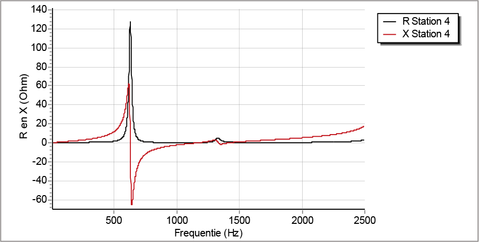Figuur 11.24 toont een voorbeeld van een willekeurig impedantie-frequentie-spectrum van een 10 kV-net. Volgens de figuur treedt in dit net op de voorbeeldlocatie parallelresonantie op bij een frequentie van 630 Hz. Dit is te zien doordat de weerstand bij die frequentie een piekwaarde heeft en de grafiek van de reactantie de horizontale as snijdt. Een tweede, minder sterk, resonantiepunt treedt op bij een frequentie van ongeveer 1330 Hz.
Alhoewel de amplitude van hogere harmonische signalen sterk afneemt bij toenemende frequentie, is het mogelijk dat een harmonische met een zelfde frequentie als van een in het net aanwezige resonantiekring optreedt, waardoor ongewenste verhoging van spanning of stroom kan voorkomen.
Harmonische stromen kunnen worden gemodelleerd met behulp van de componentnetwerken (zie hoofdstuk 7). De grondharmonische van een symmetrisch belast symmetrisch net is de gewone 50 Hz stroom en deze vloeit alleen door het normale componentnetwerk.
In een driefasenstelsel zijn de spanningen van de drie fasen 120 graden ten opzichte van elkaar verschoven. Hierdoor is de som van de drie grondharmonische fasestromen nul en loopt door de nulgeleider geen stroom. Door de 120 graden faseverschuiving van de grondharmonische is ook de derde harmonische component met 120 graden van de grondharmonische verschoven. Echter, omdat er drie perioden van de derde harmonische golf passen in één periode van de grondharmonische, komt deze 120 graden overeen met 360 graden van de derde harmonische. Als gevolg hiervan is de som van de derde harmonische componenten van de drie fasen niet meer nul, zodat er een retourstroom door de nulgeleider loopt die gelijk is aan de som van de drie derde harmonische componenten. 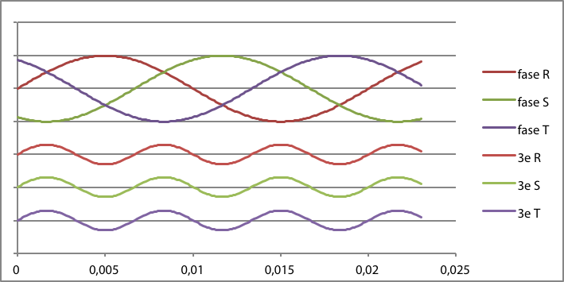
Figuur 11.25 illustreert dit voor de drie grondharmonische fasen R, S en T en hun respectievelijke derde harmonischen, waarbij de nuldoorgangen zijn gemarkeerd.
De derde harmonische stroom vloeit door het homopolaire netwerk. Deze kan echter alleen vloeien als er een retourpad voor de stroom is. Met name in laagspanningsnetten, die uitgerust zijn met nulgeleiders, kunnen de derde harmonische stromen voorkomen. In de meeste middenspanningsnetten zonder nulgeleiders komt de derde harmonische stroom niet voor.
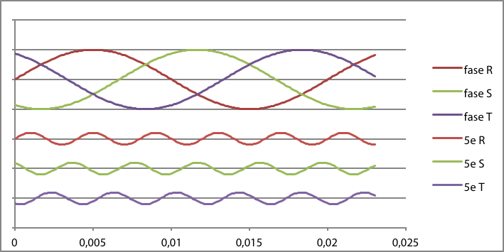De vijfde harmonische stroom, tenslotte, vloeit door het inverse netwerk. Dat is te zien in figuur 11.26, doordat bij een grondharmonische fasevolgorde R-S-T de fasevolgorde van de vijfde harmonische R-T-S is.
Drie reeksen beschrijven in welk componentnetwerk de gehele oneven harmonischen voorkomen:
Naast oneven harmonischen kunnen ook even harmonischen voorkomen. Echter, bij symmetrische golfvormen zijn de amplitudes van de even harmonischen nul. Om die reden komen de even harmonischen niet vaak voor in elektriciteitssystemen. Even harmonischen zijn ongewenst want ze veroorzaken asymmetrie tussen de positieve en negatieve halve golf in golfvormen van spanning en stroom. Niet-lineaire belastingen met asymmetrische stroom-spanningkarakteristiek zijn bronnen van even harmonische stromen. Voorbeelden zijn vlamboogovens en gelijkrichters met één diode, die alleen een halve golf gelijkrichten. Ook de inrushstroom bij een transformator bevat een groot aandeel van de tweede harmonische. Even harmonischen produceren meer nadelige effecten in elektriciteitsvoorzieningsystemen dan oneven harmonischen. Hierom zijn de eisen voor even harmonischen in de internationale norm EN 50160, zoals samengevat in tabel 11.6, strenger dan voor oneven harmonischen (Barros, 2006).
Harmonischen worden voortgebracht door niet-lineaire belastingen. In het algemeen kan een belasting, die een bron is van harmonische vervuiling, worden gemodelleerd als een combinatie van een lineaire belasting en een aantal stroombronnen, voor elke harmonische frequentie één. Figuur 11.27 toont het equivalente schema van een niet-lineaire belasting. In het equivalent worden alleen oneven harmonischen geïnjecteerd. De amplitudes van de stroombronnen zijn beschreven in het frequentiespectrum van de belastingstromen. De fasehoeken kunnen van nul verschillen en zijn belangrijk voor het reconstrueren van de golfvorm, maar worden meestal niet gegeven.

De harmonische stromen die door de niet-lineaire belasting in het distributienet worden 'geïnjecteerd', sluiten via de lineaire belastingsimpedantie en alle andere paden in het distributienet. Hierdoor ontstaan harmonische spanningen over alle impedanties waardoor deze harmonische stromen vloeien. De meeste impedanties in het distributienet zijn relatief klein, waardoor de harmonische spanningen vrij laag zullen zijn. In het geval dat door combinaties van inductie en capaciteit parallelresonantie optreedt, kan de spanning bij resonantiefrequenties wel vrij hoog worden.
De niet-lineaire belastingen kunnen zowel kleine enkelfasige als grote driefasige belastingen zijn. Enkelfasige niet-lineaire belastingen zijn onder andere:
Elektronische toestellen worden gevoed via een transformator en een gelijkrichter die een condensator oplaadt, of door een schakelende voeding. In geval van een gelijkrichter vloeit alleen stroom indien de spanning van de condensator lager is dan de voedingspanning. Als de gelijkrichtervoeding belast wordt, moet iedere halve periode de condensator opgeladen worden om een gelijkspanning met weinig rimpel te verkrijgen. Bij een gelijkrichtervoeding nemen de amplitudes van de harmonische stromen omgekeerd evenredig met de frequentie af. Een geschakelde voeding wordt geregeld met een pulserende stroom, waardoor de amplitudes van de hoge frequenties groter zijn dan bij de gelijkrichtervoeding.

Naast gelijkrichters zijn voorschakelapparaten van fluorescentieverlichting bronnen van hogere harmonischen met aanzienlijke amplitudes. Ook spaarlampen zijn bronnen van harmonische vervuiling. Figuur 11.28 geeft het frequentiespectrum van de harmonische stromen van een 11 W spaarlamp weer (Cobben, 2009).
Voorbeelden van niet-lineaire driefasige belastingen zijn:
Snelheidgeregelde aandrijvingen, UPS-systemen en omvormers zijn meestal gebaseerd op een driefasige zespulsige gelijkrichter. Deze gelijkrichters bevatten zes diodes, die elke halve cyclus per fase een puls geven. Figuur 11.29 toont het schakelschema van de zespulsige gelijkrichter.

De stromen die de zespulsige gelijkrichter voeden zijn eerder blokvormig dan sinusvormig. Figuur 11.30 toont de drie fasestromen IL1, IL2 en IL3 als functie van de tijd. De stromen door de nulgeleider en de PE zijn nul, want deze zijn niet met de gelijkrichter verbonden.

De stroom van een fase van de gelijkrichter kan als een reeks van cosinuscomponenten overeenkomstig vergelijking 11.32 als volgt worden beschreven:
[ |
11.47 |
] |
met:
| ω | 2πf |
| Idc | gelijkstroom |
In de stroom volgens vergelijking 11.47 komen geen derde harmonischen en oneven veelvouden daarvan voor. Dat klopt ook met het feit dat deze gelijkrichter geen sterpunt heeft en dus geen homopolair systeem waar de derde harmonische stroom in kan lopen. De stroom heeft alleen harmonischen van de orde 6k±1, waarbij k een geheel getal is. De harmonischen van de orde 6k+1, bevinden zich in het normale systeem en de harmonischen van de orde 6k–1, bevinden zich in het inverse systeem.

Figuur 11.31 toont het frequentiespectrum van de stroom die in de verbinding tussen het distributienet en de zespulsige gelijkrichter vloeit (Arrillaga, 1985). De amplitudes van de harmonische stromen zijn omgekeerd evenredig met het harmonische ordenummer. Hierdoor bedragen bijvoorbeeld de amplitudes van de stroom van de vijfde en zevende harmonischen respectievelijk 20% en 14% van de nominale stroom.
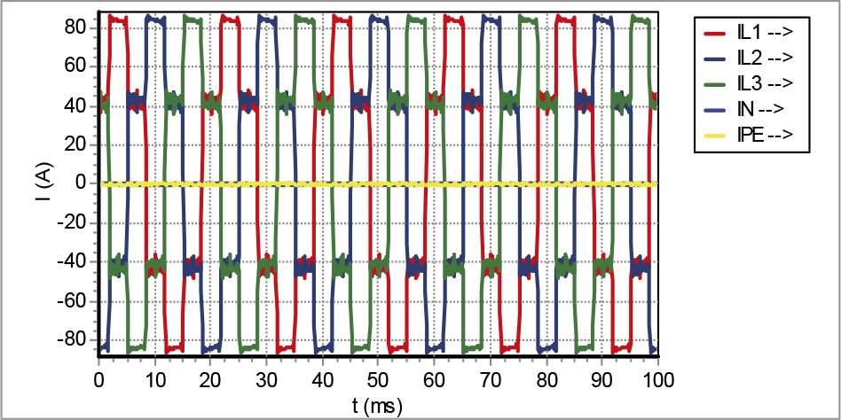Indien de zespulsige gelijkrichter gevoed wordt door een Yd5-transformator, is de primaire wisselstroom die door een fase loopt, gelijk aan de som van twee secundaire stromen die 120 graden ten opzichte van elkaar in fase verschillen. Figuur 11.32 toont de golfvorm van de primaire stromen door de drie fasen.
De primaire wisselstroom kan voor een fase als volgt worden beschreven (Dixon, 2001):
 |
[ |
11.48 |
] |
met:
| ω | 2πf |
| Idc | gelijkstroom |
Het verschil tussen de stroom van de zespulsige gelijkrichter volgens vergelijking 11.47 en de stroom bij toepassing van een Yd5-transformator volgens vergelijking 11.48 is dat het teken van de 5e en 7e harmonischen tegengesteld is. Datzelfde geldt ook voor het teken van de 17e en 19e harmonischen. In het algemeen geldt dit voor alle harmonischen van de orde 6k±1, waarbij k een oneven geheel getal is.
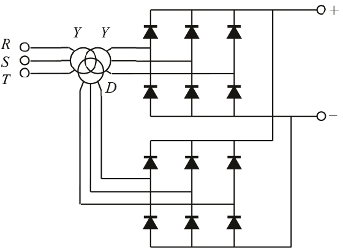Door nu twee identieke zespulsige gelijkrichters te gebruiken en deze te voeden door een Yy0d5-driewikkelingstransformator, zoals weergegeven in figuur 11.33, worden de stromen (beschreven met vergelijkingen 11.47 en 11.48) aan primaire zijde opgeteld. Als gevolg heffen de harmonischen met tegengesteld teken elkaar op. In dit geval zijn dat de harmonischen van de orde 6k±1, waarbij k een oneven geheel getal is, zoals de 5e, 7e, 17e en 19e harmonischen. De primaire stroom van de driewikkelingstransformator kan als volgt worden beschreven:
[ |
11.49 |
] |
Deze serie bevat alleen harmonischen van de orde 12k±1, waarbij k een geheel getal is. Het systeem wordt een twaalfpulsige gelijkrichter genoemd. De harmonischen van de orde 6k±1, waarbij k een oneven geheel getal is, vloeien alleen tussen de twee secundaire transformatorwikkelingen en vloeien niet naar het voedende net. Figuur 11.34 toont de golfvorm van de stromen door de drie fasen van de twaalfpulsige gelijkrichter. Duidelijk zichtbaar is dat deze golfvorm, in vergelijking met de stroom van de zespulsige gelijkrichter, de sinusvorm al beter benadert.
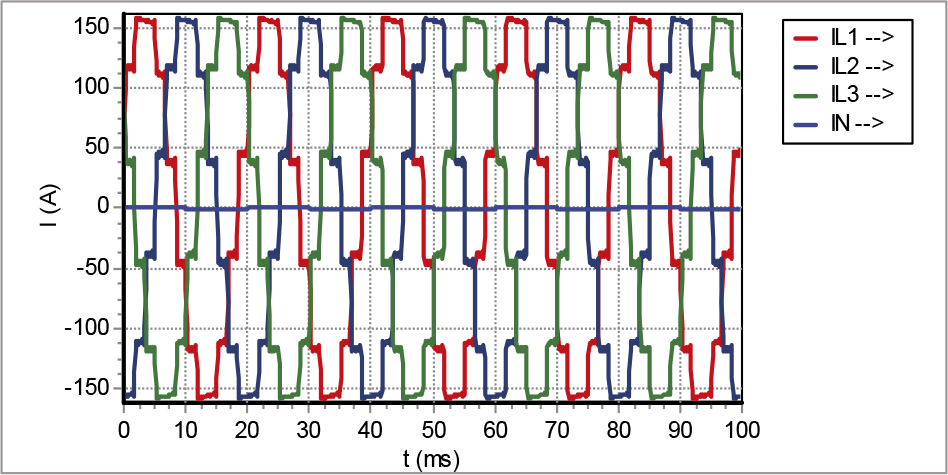Dit systeem is duurder dan de zespulsige gelijkrichter, maar levert een aanzienlijke reductie op de harmonische vervuiling. Bij grote vermogens wordt vaak geëist dat deze via een twaalfpulsige gelijkrichter worden gevoed. Figuur 11.35 toont het frequentiespectrum, waarin duidelijk zichtbaar is dat de eerste harmonische de 11e is, met een amplitude van 9%.

Aan het begin van deze paragraaf is al een aantal mogelijke problemen aangegeven die door harmonischen worden veroorzaakt. Harmonische stromen en spanningen kunnen leiden tot:
Zoals gesteld in paragraaf 11.6.4 leidt een harmonische stroom, waarvan het ordenummer gelijk is aan een geheel veelvoud van 3, tot een stroom in de nulgeleider. Dit probleem komt alleen in netten met een nulgeleider voor, waar de belastingen tussen de fasen en nul zijn geschakeld, zoals in LS-netwerken. Met name bij installaties waarin schakelende voedingen of fluorescentieverlichting is toegepast, moet rekening gehouden worden met de retourstroom, die groter kan worden dan de fasestroom. Met een voorbeeld wordt de invloed van de harmonische stromen op de nulgeleider toegelicht. Het voorbeeld betreft een netwerk, waarbij de belasting volledig bestaat uit spaarlampen waarvan het frequentiespectrum is weergegeven in figuur 11.28. In het voorbeeld is de 19e harmonische de hoogste. De stroomsterkte van de basisharmonische is gegeven: I1 = 80 A. Tabel 11.7 geeft de details van de berekening van de RMS-waarden van de stroom door de fasen en de stroom door de retourleiding. De berekening verloopt volgens vergelijking 11.33.
h |
Ih (%) |
Ih (A) |
Ik2 (A2) |
Iretour (A) |
Iretour2 (A2) |
1 |
100 |
80,0 |
6400 |
||
3 |
80 |
64,0 |
4096 |
192 |
36864 |
5 |
60 |
48,0 |
2304 |
||
7 |
40 |
32,0 |
1024 |
||
9 |
38 |
30,4 |
924 |
91 |
8317 |
11 |
38 |
30,4 |
924 |
||
13 |
30 |
24,0 |
576 |
||
15 |
20 |
16,0 |
256 |
48 |
2304 |
17 |
20 |
16,0 |
256 |
||
19 |
20 |
16,0 |
256 |
||
–––––– + |
–––––– + |
||||
17016 |
47485 |
||||
Irms: |
130 |
Irms: |
218 |
Volgens paragraaf 11.6.4 vloeien alleen de stromen van de 3e, 9e en 15e harmonischen door de nulgeleider, die in dit voorbeeld het enige retourpad vormt. Dit komt doordat de stromen van de basisfrequentie in de drie fasen een hoek van 120 graden ten opzichte van elkaar maken. Hierdoor hebben alle harmonische stromen met een ordenummer van 3 of een geheel veelvoud daarvan dezelfde fasehoek ten opzichte van elkaar, zoals afgebeeld in figuur 11.25. Deze hogere harmonische stromen vloeien dan met dezelfde fasehoek door de retourgeleider. Als gevolg vloeit elke fasestroom van de 3e, 9e en 15e harmonische drie maal zo sterk door de retourgeleider. De resultaten van de berekening zijn in het schema van figuur 11.36 samengevat.
De harmonische loadflowberekening geeft inzicht in de RMS-waarden van de stromen en spanningen als gevolg van de bedrijfssituatie met harmonische vervuiling. De stroom door de fasegeleiders bestaat uit de grondharmonische plus alle harmonische stromen. De stroom door de nulgeleider bestaat uit drie maal de harmonischen waarvan het ordenummer een oneven veelvoud van drie is. Aangezien de amplitude van de derde harmonische stroom 80% bedraagt van de grondharmonische, is de stroom door de nulgeleider groter dan de stroom door de fasegeleiders. Hiermee moet bij het dimensioneren van LS-installaties rekening worden gehouden.
Wervelstroomverliezen zijn een belangrijk onderdeel van de koperverliezen van een transformator en deze zijn afhankelijk van het kwadraat van het harmonische ordenummer. Dit heeft grote gevolgen voor de verliezen van transformatoren die bijvoorbeeld grote computersystemen voeden. Hiermee kan rekening worden gehouden door middel van een K-factor, die bij elke transformator gespecificeerd is (zie paragraaf 11.6.7).
De impedantie van een condensator is omgekeerd evenredig met de frequentie (vergelijking 11.46). Als gevolg zullen cos(φ) verbeterende condensatoren bij een grote hoeveelheid hoge harmonischen een grote stroom trekken. Hierdoor kunnen zij beschadigen. Bovendien kunnen condensatoren met de inductie in het net in resonantie geraken, waardoor grote harmonische spanningen kunnen ontstaan.
Harmonische spanningen veroorzaken in asynchrone motoren wervelstroomverliezen zoals bij de transformatoren. Bovendien hebben de harmonische velden in de stator een tegenwerkend effect op rotatie van de rotor. In de rotor geïnduceerde harmonische stromen leiden tot extra rotorverliezen.
Aardlekschakelaars kunnen onverwachts uitschakelen doordat zij reageren op capacitieve stromen door eventueel aanwezige condensatoren. Bovendien worden smeltveiligheden door de hogere harmonische stromen extra verwarmd, waardoor zij eerder uitschakelen dan verwacht.
De verliezen in transformatoren bestaan uit magnetiseringsverliezen in de transformatorkern en uit weerstandsverliezen en wervelstroomverliezen (Eddy current) in de windingen. Van al deze verliezen moet bij het aanwezig zijn van hogere harmonischen goed rekening gehouden worden met de wervelstroomverliezen, want deze zijn kwadratisch afhankelijk van de frequentie. De toename van de verliezen hangt nauw samen met het harmonische spectrum van de belastingstroom.
Door de hogere harmonische stromen worden transformatoren extra belast. Als gevolg hiervan moet de maximale belasting van de transformator worden gereduceerd om levensduurverkorting of beschadiging ten gevolge van te hoge temperaturen te voorkomen. De noodzakelijke belastingsreductie kan worden geschat met behulp van de zogenaamde K-factor en de reductiefactor K. Deze factoren zijn indicatief voor de hoeveelheid harmonischen in de stroom en kunnen gemeten worden. Bij transformatoren is de waarde van de K-factor gespecificeerd.
Het wervelstroomverlies voor een bepaalde harmonische stroom is:
 (W) (W) |
[ |
11.50 |
] |
Met:
| PEC,h | wervelstroomverlies bij harmonische met orde h |
| PEC,0 | wervelstroomverlies bij de basisfrequentie f |
| Ih | amplitude van de stroom bij harmonische met orde h |
| Irms | RMS-waarde van de stroom (formule 11.33). |
Het totale wervelstroomverlies wordt berekend door de wervelstroomverliezen voor alle harmonischen en voor de basisfrequentie te sommeren:
 (W) (W) |
[ |
11.51 |
] |
Er bestaan twee methodes om de wervelstroomverliezen in rekening te brengen voor het dimensioneren van een transformator. De eerste methode is afkomstig uit de Verenigde Staten en berekent een K-factor uit het harmonische spectrum, waarmee een voor deze waarde geschikte transformator wordt uitgezocht. De tweede methode wordt in Europa toegepast en berekent de belastingsreductie (de-rating) van de transformator zodat de transformator niet boven zijn specificaties belast wordt. Deze belastingsreductie wordt aangegeven met de reductiefactor K. De K-factor en de reductiefactor K worden niet op dezelfde manier berekend en de resultaten zijn numeriek verschillend (Copper, 2000).
De K-factor is een vermenigvuldigingsfactor voor het berekenen van de toename van de wervelstroomverliezen. Deze factor wordt als volgt berekend:
[ |
11.52 |
] |
De K-factor wordt gemeten door in de handel zijnde meetinstrumenten en zegt meer over de belasting dan over de transformator. De K-factor van een PC is bijvoorbeeld 11,6. Indien eenmaal de K-factor voor de belasting bekend is, kan de geschikte transformator worden gekozen door er een te kiezen waarvan de door de fabrikant gespecificeerde K-waarde groter is dan de gemeten waarde. Transformatoren zijn leverbaar met standaard K-waarden in de reeks van: 4, 9, 13, 20, 30, 40, 50.
De reductiefactor K is een factor voor het berekenen van de reductie van de transformatorbelasting. Deze factor wordt als volgt berekend:
 |
[ |
11.53 |
] |
Met:
| e | verhouding tussen het wervelstroomverlies bij de basisfrequentie en het Ohmse verlies, beide bij de referentietemperatuur; de waarde wordt gespecificeerd door de fabrikant en ligt tussen 0,05 en 0,1 |
| q | constante die sterk afhangt van de constructie van de transformator; de waarde wordt gespecificeerd door de fabrikant en ligt tussen 1,5 en 1,7 |
| h | harmonische orde |
| Ih | amplitude van de stroom bij harmonische met orde h |
| Irms | RMS-waarde van de stroom (formule 11.33) |
| I1 | amplitude van de stroom bij de basisfrequentie. |
Het voordeel van een transformator die is gebouwd voor een specifieke K-factor ten opzichte van toepassing van een met een reductiefactor overgedimensioneerde standaardtransformator is dat door keuzes aangaande de constructie de wervelstromen laag zijn gehouden. Hierdoor hoeft de transformator niet overgedimensioneerd te worden. Een overgedimensioneerde transformator is minder efficiënt en is moeilijker selectief te beveiligen. Bij een ruim gedimensioneerde transformator treedt een relatief hoge inrush-stroom op, die tot ongewenste afschakeling kan leiden.
Als voorbeeld worden beide methodes uitgewerkt voor een belasting die vanuit een gelijkrichter gevoed wordt. Figuur 11.31 toont het frequentiespectrum van de stroom in de verbinding tussen het distributienet en de zespulsige gelijkrichter. De K-factor kan met behulp van een spreadsheet berekend worden. Hierbij wordt gebruik gemaakt van de RMS-waarde van de stroom, die met de tweede en derde kolommen wordt uitgerekend. De vierde, vijfde en zesde kolommen worden gebruikt om de sommatie van vergelijking 11.52 te bepalen.
h |
Ih/I1 |
(Ih/I1)2 |
Ih/Irms |
(Ih/Irms)2 |
(Ih/Irms)2 x h2 |
1 |
1,000 |
1,000 |
0,962 |
0,925 |
0,925 |
5 |
0,200 |
0,040 |
0,192 |
0,037 |
0,925 |
7 |
0,143 |
0,020 |
0,138 |
0,019 |
0,927 |
11 |
0,091 |
0,008 |
0,088 |
0,008 |
0,927 |
13 |
0,077 |
0,006 |
0,074 |
0,005 |
0,927 |
17 |
0,059 |
0,003 |
0,057 |
0,003 |
0,931 |
19 |
0,053 |
0,003 |
0,051 |
0,003 |
0,938 |
--------- |
--------- |
||||
Som: |
1,081 |
Som: |
6,500 |
||
Irms: |
1,040 |
De som van de laatste kolom is gelijk aan de waarde van de K-factor. In dit voorbeeld voldoet een standaard transformator met een K-waarde van 9 of hoger om de zespulsige gelijkrichter te voeden.
Bij de tweede methode wordt de belastingreductie van de transformator berekend. Hierbij wordt net als in tabel 11.8 gebruik gemaakt van de RMS-waarde van de stroom, die met de tweede en derde kolommen wordt uitgerekend. De vierde en vijfde kolommen worden gebruikt om de sommatie van vergelijking 11.53 (onder het wortelteken) te bepalen. Hierbij is uitgegaan van een waarde van q gelijk aan 1,7.
h |
Ih/I1 |
(Ih/I1)2 |
hq |
(Ih/I1)2 x hq |
1 |
1,000 |
1,000 |
||
5 |
0,200 |
0,040 |
15,426 |
0,617 |
7 |
0,143 |
0,020 |
27,332 |
0,559 |
11 |
0,091 |
0,008 |
58,934 |
0,488 |
13 |
0,077 |
0,006 |
78,290 |
0,464 |
17 |
0,059 |
0,003 |
123,527 |
0,430 |
19 |
0,053 |
0,003 |
149,239 |
0,419 |
--------- |
--------- |
|||
Som: |
1,081 |
Som: |
2,977 |
|
Irms: |
1,040 |
Indien voorts wordt uitgegaan van een waarde van e gelijk aan 0,1, dan wordt de reductiefactor K als volgt bepaald:
 |
[ |
11.54 |
] |
Als gevolg mag de transformator met maximaal 100/K = 89% belast worden.
Er bestaan meerdere methoden om de harmonischen in een netwerk te reduceren. Elke methode heeft voor- en nadelen. Enkele methoden zijn:
De eerste methode berust op het principe dat de gevolgen van de harmonische stromen in een net met lage netimpedantie minder sterke gevolgen heeft voor de vervuiling van de netspanning. In het geval dat dat niet helpt, kan worden overwogen de vervuilende belasting op een separaat 'vuil' net aan te sluiten, dat eventueel door een separate transformator wordt gevoed.
Passieve filters kunnen harmonische stromen blokkeren of doorlaten. Het blokkeren wordt gedaan met een sperfilter, bestaande uit een parallelschakeling van een spoel en een condensator. De impedantie van zo een filter is hoog voor stromen met de resonantiefrequentie. Een sperfilter kan worden toegepast in serie met de toevoerleiding van een installatie. Daarnaast bestaat het doorlaat- of zuigfilter uit een serieschakeling van een spoel en een condensator. De impedantie van zo een filter is juist heel laag voor stromen met de resonantiefrequentie. Deze filters worden toegepast tussen de fasen of tussen fasen en nul en kunnen harmonischen van specifieke resonantiefrequenties wegfilteren. Eventueel kunnen meerdere filters voor diverse resonantiefrequenties parallel worden toegepast.
Actieve filters meten de harmonische vervuiling in de belastingstroom en injecteren de hogere harmonische stromen op een zodanige wijze dat de voeding vanuit het elektriciteitsnet zoveel mogelijk alleen de stroom van de basisfrequentie 'ziet'. Deze filters kunnen goed worden toegepast in situaties waar de belasting veel en sterk varieert, omdat het in die gevallen niet mogelijk is met passieve filters te werken. In de praktijk wordt de grootte van de hogere harmonische stromen hiermee met 90% verlaagd (Copper, 2002-2).
Het modelleren van componenten is in de literatuur uitvoerig beschreven (Acha, 2001), (Arrillaga, 1997). Er zijn diverse manieren om dit te doen, afhankelijk van de mate van detaillering en asymmetrie in het net. Ook kan zover gegaan worden dat het gedrag van de modellen beïnvloed wordt door de harmonische vervuiling in het net. In de meeste praktische situaties is het voldoende nauwkeurig om te kiezen voor een model dat gebaseerd is op een symmetrisch driefasensysteem met driefasensymmetrische harmonische bronnen. Hierbij worden alleen de oneven harmonischen geëvalueerd (paragraaf 11.6.4).
De niet-lineaire bronnen worden gemodelleerd met stroombronnen voor iedere gespecificeerde harmonische stroominjectie. Deze zijn beschreven in paragraaf 11.6.5. Alle netcomponenten, zoals kabels, belastingen, motoren, condensatoren en spoelen, hebben een model voor hogere frequenties en worden beschreven met serie- en dwarsimpedanties.
De bovengrondse verbinding en de ondergrondse kabel worden gemodelleerd met het model van de lange transmissielijn. Dit model wordt ook wel aangeduid als het distributed parameter model. Figuur 11.37 geeft het model weer als een pi-model van een langsadmittantie en twee dwarsadmittanties.

De waarden van de admittanties worden als volgt bepaald voor een specifieke frequentie van orde h:
[ |
11.55 |
] |
Waarin Zc de karakteristieke impedantie is en θ de karakteristieke hoek:
|
|
|
met:
| R | weerstand in Ω/km |
| L | zelfinductie in H/km |
| G | shuntgeleiding in S/km |
| C | capaciteit in F/km |
| l | lengte in km |
| h | harmonische orde nummer |
| ω | basishoekfrequentie (2πf) |
De gegevens R, L en C zijn de normale parameters van de kabel of lijn tijdens normaal bedrijf. De shuntgeleiding is een maat voor de lekweerstand tussen geleider en afscherming. De lekweerstand is meestal zeer groot, waardoor de shuntgeleiding zeer klein is en meestal verwaarloosd wordt.
De impedantie van de transformator wordt bepaald zoals beschreven in hoofdstuk 8 (Modellen). Hieruit volgen waarden voor de weerstand (RT,50) en de reactantie (XT,50) bij de basisfrequentie. De reactantie is lineair afhankelijk van de frequentie. De weerstand is eveneens afhankelijk van de frequentie. Door het skin-effect gaat de stroom aan de buitenkant van een geleider lopen. Bij hogere frequentie neemt dit verschijnsel toe. Het is gebruikelijk de weerstand evenredig met de wortel van h te laten toenemen (Arrillaga, 1985). De impedantie voor een frequentie van orde h wordt dan als volgt bepaald:
[ |
11.56 |
] |
De netvoeding wordt gemodelleerd met een vaste spanningsbron achter de kortsluitimpedantie. De reactantie wordt bepaald door de inductie en de frequentie:
[ |
11.57 |
] |
De condensator is een shuntelement. De waarde van de admittantie wordt vanuit de capaciteit of vanuit de nominale blindvermogensinjectie bepaald. De geleiding wordt hierbij nul verondersteld:
[ |
11.58 |
] |
Door serieschakeling van een spoel en een condensator kan een R-L-C filter worden gemaakt. De impedantie kan worden afgeleid uit de filterfrequentie en de filterkwaliteit. De grootte van de condensator is gegeven in Mvar of in μF. Uitgangspunt is het reactieve vermogen van de condensator bij de nominale frequentie: Qc. De weerstand en de inductie volgen uit de filterfrequentie en de kwaliteitsfactor. De reactantie van de condensator bij de basisfrequentie wordt als volgt berekend:
[ |
11.59 |
] |
Hierin is Unom de nominale spanning in kV en hf het quotiënt van de filterfrequentie en de basisfrequentie. De inductie van de spoel bij de basisfrequentie wordt als volgt berekend:
 |
[ |
11.60 |
] |
De weerstand van het filter wordt bepaald uit de gewenste kwaliteitsfactor q. Deze ligt doorgaans tussen 20 en 30:
[ |
11.61 |
] |
De impedantie van het filter voor een harmonische frequentie met ordenummer h is dan tenslotte:
[ |
11.62 |
] |
De waarde van de admittantie van de shuntspoel wordt vanuit de inductie of vanuit de nominale blindvermogensconsumptie bepaald. De weerstand wordt daarbij nul verondersteld:
 |
[ |
11.63 |
] |
De synchrone machine is voor de harmonischen een belasting. Het model is (Arrillaga, 1997):
[ |
11.64 |
] |
Met:
| RSM,50 | fictieve synchrone machineweerstand bij basisfrequentie in Ω |
| Xd" | subtransiënte reactantie bij basisfrequentie in Ω |
Van de synchrone machine is hierbij aangenomen dat de wikkelingen in driehoek geschakeld zijn zodat deze geen sterpunt heeft en geen model in het homopolaire systeem heeft.
Van de asynchrone machine wordt de hoofdveldimpedantie verwaarloosd. Voorts wordt uitgegaan van ervaringsgetallen, zoals de verhouding van de stator- en rotorweerstand met behulp van de constanten a en b. Voor de machine-impedantie voor harmonischen (Arrillaga, 1997) geldt:
Reactantie:
 |
[ |
11.65 |
] |
Weerstand voor normale netwerk:
[ |
11.65 |
] |
Weerstand voor inverse netwerk:
 |
[ |
11.65 |
] |
Met:
| RSM,50 | totale motorweerstand met stilstaande rotor bij basisfrequentie in Ω |
| XSM,50 | motor kortsluitreactantie bij basisfrequentie in Ω |
| a | 0,45 |
| b | 0,55 |
De asynchrone machine is dus een van de weinige componenten waarvan het model voor het inverse systeem afwijkt van het normale systeem. Van de asynchrone machine is hierbij aangenomen dat de wikkelingen in driehoek geschakeld zijn zodat deze geen sterpunt heeft en geen model in het homopolaire systeem heeft.
Een belasting die harmonische stromen produceert, veroorzaakt harmonische vervuiling in de netspanning. De mate waarin de netspanning vervuild wordt, hangt af van het nominale vermogen van de belasting in relatie tot het kortsluitvermogen van het voedende net. In de internationale norm IEC 61000-3-12 wordt deze verhouding aangeduid met de verhouding (ratio) Rsce:
[ |
11.66 |
] |
Met:
| Unom | nominale gekoppelde netspanning |
| Znet | fase-impedantie van het voedende net |
| Ibelasting,nom | nominale stroom van de belasting |
Een apparaat met een nominale stroom kleiner dan 16 A wordt getoetst aan IEC 61000-3-2. Indien het apparaat voldoet, kan het worden aangesloten. Bij apparaten met een grotere nominale stroom, maar maximaal 75 A, wordt getoetst aan de norm IEC 61000-3-12. Indien deze apparaten voldoen aan de norm kunnen zij worden aangesloten indien de waarde van de verhouding Rsce minimaal 33 is. Bij een hogere waarde worden grotere harmonische stromen toegelaten. Indien de verhouding kleiner is dan 33, kunnen de apparaten worden aangesloten nadat bekeken is of de harmonische vervuiling niet leidt tot overschrijding van de norm EN 50160. Voor apparaten met een nominale stroom groter dan 75 A moet de invloed op de harmonische vervuiling nader worden geanalyseerd. Meer informatie hierover is te vinden in de literatuur (Cobben, 2009).
Teneinde meetresultaten goed te kunnen presenteren en te vergelijken is een methode ontwikkeld (Cobben, 2007), waarbij de afzonderlijk te onderscheiden Power Quality-onderdelen worden ingedeeld op zes niveaus, variërend van A (zeer goed) tot F (zeer slecht). De eisen van de Netcode liggen op de grens van de categorieën C en D.
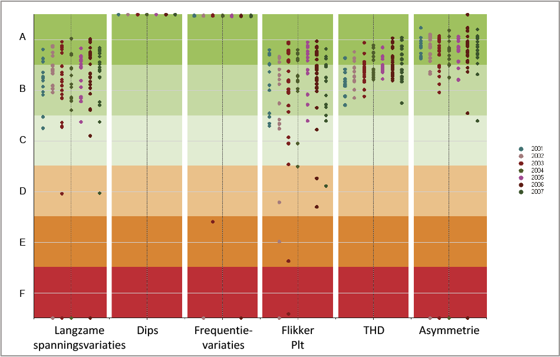Figuur 11.38 toont als voorbeeld de resultaten van een serie metingen op 13 locaties in de jaren 2001 tot en met 2007 (Provoost, 2009). Hierin is te zien dat op alle meetlocaties voldaan wordt aan de eisen ten aanzien van dips, harmonischen en asymmetrie, maar dat een aantal meetlocaties minder goed scoren op het gebied van langzame spanningsvariaties, frequentie en flikker.
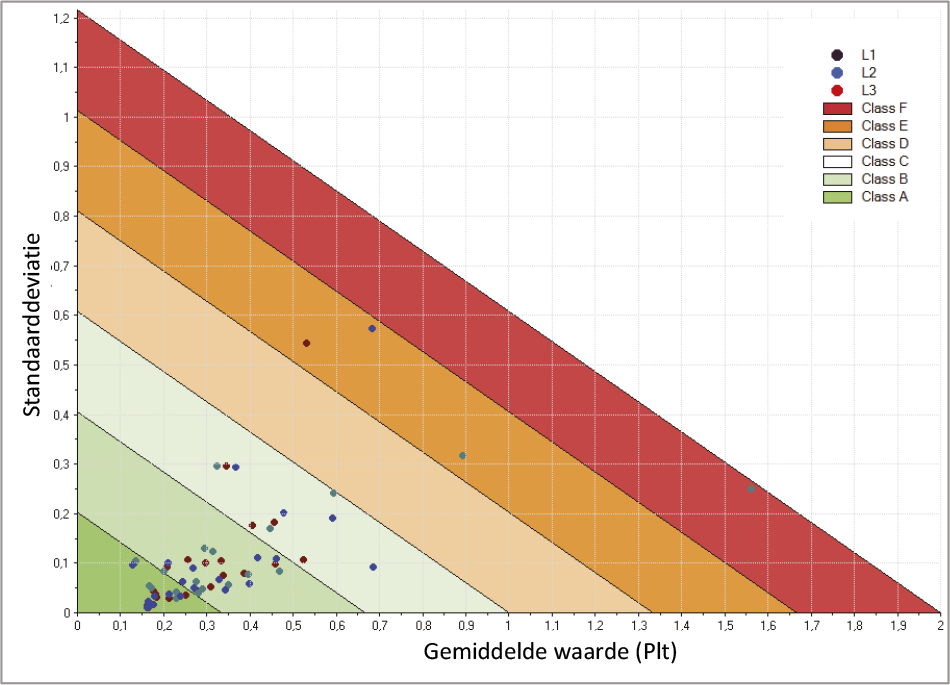Voor alle metingen kunnen gemiddelde waarden en standaardafwijkingen worden berekend. Door de berekende waarden van de gemiddelden en de standaardafwijkingen tegen elkaar af te zetten, zoals weergegeven in figuur 11.39 en figuur 11.40, kunnen de Power Quality metingen meer in detail worden bestudeerd. Figuur 11.39 toont de classificatie van de gemiddelde waarden en de standaardafwijkingen van de flikkermetingen. Hoe hoger de gemiddelde waarde van de Plt, des te kleiner de standaardafwijking mag zijn. De hellingshoek van de lijnen en de indeling van de gebieden zijn bepaald doordat met een kans van 95% alle waarden kleiner zijn dan de som van het gemiddelde en 1,65 maal de standaard deviatie (Cobben, 2007). Vandaar dat de middelste lijn tussen de klassen C en D bij een gemiddelde waarde van 1 een standaard deviatie van 0 heeft en bij een gemiddelde waarde van 0 een standaarddeviatie van 1/1,65 = 0,61. Vier meetpunten in het voorbeeld van figuur 11.39 vallen buiten de eisen van de Netcode.
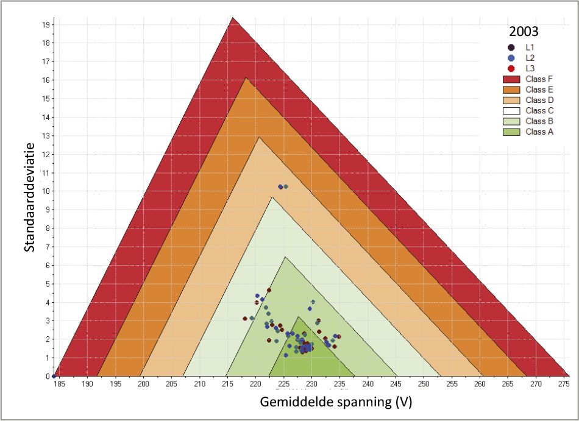Figuur 11.40 toont de classificatie van de gemiddelde waarden en de standaardafwijkingen van de spanningsmetingen. In dit geval zijn de gebieden afgebakend met twee schuine lijnen, omdat de afwijking van de nominale spanning aan boven- en onderzijde begrensd is.

Indien het resultaat van de classificatie vragen oproept, kan met de gedetailleerde metingen nader onderzoek verricht worden. Figuur 11.41 toont de gedetailleerde metingen van de spanningen van de drie fasen van een specifieke locatie in een LS-net over een opgevraagde week. De spanningen zijn weergegeven in V als functie van de tijd.
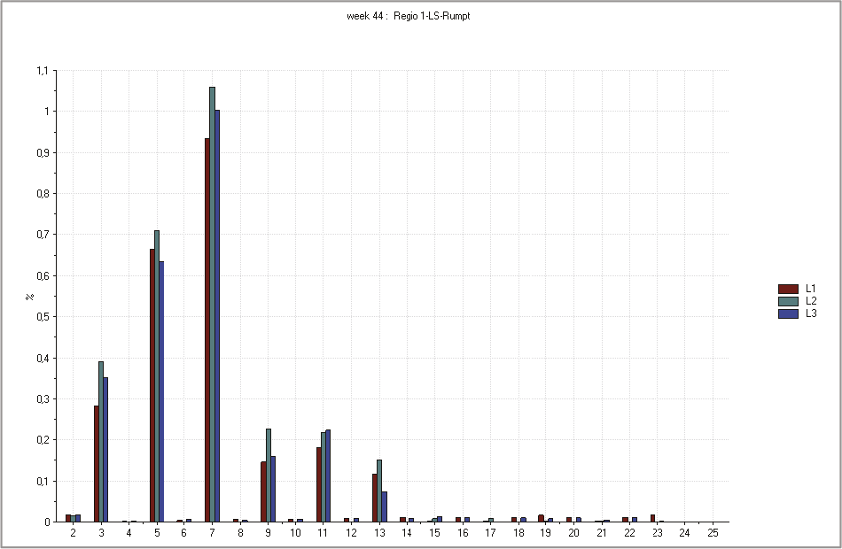Figuur 11.42 toont de over een week gemiddelde waarden van de harmonische vervuiling, in % van de nominale spanning. In het voorbeeld zijn de metingen weergegeven van de drie fasen van een specifieke locatie in het LS-net.
Phase to Phase is onderdeel van Technolution. © 2009-2021